ГЕНЕЗИС ПОНЯТИЯ ДВИЖЕНИЯ
(К истории механики)1
I. Механика и логика
Чтобы более конкретно проследить в развитии научного понятия развитие противоречий научного познания в целом (так, чтобы этот анализ имел не частное, а всеобщее значение), необходимо правильно наметить предмет исследования. Этим предметом, очевидно, должна быть такая наука и такое научное понятие, развитие которых может претендовать на логическую всеобщность.
Нам думается, что таким предметом исследования может служить история механики, точнее, история понятия механического движения, составляющая логическую сущность истории механики2.
Выскажем некоторые предварительные соображения в пользу такого выбора.
Но сначала — небольшое отступление.
Стоит ли, спросит читатель, все время забегать вперед и преподносить результаты еще не проведенного исследования?
Нам кажется, что в определенных пределах такое «забегание вперед» не только полезно, но и необходимо.
Представление о целях и основных идеях, о замысле изучаемой книги помогает читателю воспринимать все «ходы» авторской мысли сознательно, придирчиво, соотнося средства с целью, замысел — с исполнением.
Так же как сам автор не может сделать ни шага в своем исследовании, смотря только себе «под ноги», не вглядываясь далеко вперед, как писатель с самого начала,— пусть неясно, «сквозь магический кристалл» — различает конечный (еще не достигнутый) результат своего труда, точно так же должен использовать этот «кристалл» и читатель, «потребитель» наших работ, если, конечно, мы хотим вести наш теоретический диалог достаточно честно.
Безусловно, цель сначала различается неясно, в общих чертах, она постоянно уточняется и конкретизируется, изменяется и развивается. Собственно, само приближение к цели состоит именно в этом уточнении и конкретизации предвидимого, но неясно различаемого результата. Безусловно, далее, что если дорога не «обернется» целью, если цель, идея исследования оказалась мнимой, не способной к конкретизации, фальшивой, то не следует догматически цепляться за нее и выдавать бездорожье за Невский проспект. И все же без такой целенаправленности ни научная работа, ни чтение научных работ невозможны. Но дело не только в этом.
Такая ясность цели, понимание со стороны читателя, куда его ведут, особенно полезны и необходимы, так сказать, по соображениям научной этики. Ведь что ни говори, а автор, излагая процесс исследования, уже завершил его, хотя бы в основных, пунктирных чертах, поэтому он всегда строит все изложение как бы в двух плоскостях: в плоскости движения к цели и в плоскости обратного движения — от результата к исходному пункту, в плоскости так называемого доказательства. Но если это так, то не следует читателя обманывать и делать вид, что мы и сами еще не знаем, куда идем и куда его приведем с собой. Пусть читатель сможет постоянно контролировать убедительность и честность нашего доказательства. Контроля не следует бояться, иначе мы и сами перестанем контролировать себя, поскольку именно движение в двух плоскостях («развития мысли» и «доказательства») составляет сущность этого научного самоконтроля.
Итак, какие доводы в пользу истории механики — как предмета логического анализа можно привести, исходя из теоретической структуры механики как науки?3
Первый довод. Анализ истории понятия движения (в механике) позволяет органически соединить предметное, историко-научное рассмотрение вопроса с рассмотрением логическим, категориальным. Если каждое понятие выступает в процессе движения мысли как единство предметного и категориального содержания, особенного и всеобщего значения, то для таких физических понятий, как движение, пространство, время (поскольку они употребляются в теоретических системах физики), это тождество предметного и категориального выступает особенно очевидно, наглядно. Речь идет, конечно, о теоретической наглядности.
Употребляя понятие «движение», физик-теоретик не может пройти мимо его категориального содержания, не может не осознать его логического значения.
Имеется в виду следующее. Обычно, развивая логические, категориальные связи понятий, утверждая, что данное явление случайно, ученый не вдумывается специально в смысл употребленных им категорий, использует их интуитивно, как нечто само собой разумеющееся. Он раскрывает логику предметных процессов, при помощи логики анализирует вещи, но сам этот логический критерий выскакивает в его рассуждениях как deus ex machina, логика не выступает для него предметом познания.
Во всяком случае так было до самых последних десятилетий. Сейчас дело изменяется. Привычный логический «аппарат» все пристальнее изучается самими естествоиспытателями — подвергается сомнению, переопределяется. Под лупу логического анализа (вопрос только в том, как понимается этот анализ) подводятся самые прочные логические узлы — понятия причинности, закономерности, вероятности, случайности и т. д. Ничто не берется на веру, ничто не представляется само собой разумеющимся.
Но это — в последнее время.
Что же касается понятия механического движения, то всегда любая теория механики, отвечая на вопрос, как измерить, как рассчитать движение, должна была осознать логическую проблему,— как возможно движение — должна была задуматься над развитием логической категории движения4. Логика движения всегда выступала предметом научного познания. Не случайно поэтому, именно история понятия движения (в механике) полна наиболее трагическими борениями мысли вокруг логических «апорий», «антиномий» и «парадоксов».
Второй довод. Любое научное понятие выступает как диалектическое противоречие, как тождество противоположностей именно потому и постольку, поскольку любое научное понятие, воспроизводя сущность предмета, воспроизводит специфическую форму движения этого предмета. Все диалектические противоречия — это противоречия воспроизведения движения в логике понятий. Исходным пунктом всех этих противоречий выступают «апории Зенона». Всех — в том числе, конечно, и противоречий движения самой мысли, противоречий развития понятий. В абстрактных понятиях (и в их системе) только принцип движения нельзя выразить иначе как принципом тождества противоположностей. Все остальное можно. Горе лишь в том, что в сущности вещей «остального» вообще не имеется; эта сущность всегда оборачивается все тем же принципом движения в его особенной, конкретной, специфической форме.
Вспоминается, как на недавней философской дискуссии один из ораторов патетически воскликнул: «Укажите мне хоть одно научное понятие, в котором действовало бы это мифическое противоречие!?»
Как бы в ответ на этот риторический вопрос звучат спокойные слова де-Бройля: «Понятие электрон, так же как все другие элементарные физические понятия, имеют... два противоречивых аспекта»5. (Эту противоположность физики обычно замечают только в форме ее проявления — в «дополнительности», но это уже другой вопрос.) К словам де-Бройля присоединяются Борн, Гейзенберг, Эйнштейн.
Статика Архимеда, Стевина, динамика Галилея и Ньютона, современная квантовая механика имели и имеют в качестве своего понятийного «корня» все тот же парадокс движения, впервые высказанный в форме «апорий» Зеноном Элейским. Это хотя и один, но довольно типичный случай. Именно этот случай будет предметом анализа во II и III разделах данной части.
Третий довод. Анализ истории понятия движения (в системе естественных наук) возможен сейчас только как анализ истории понятия механического движения. Именно история механики позволит уловить общие, логические закономерности, антиномии, трудности, коллизии, присущие познанию любого движения, позволит тем самым вскрыть в «теле» научного понятия средоточие всех противоречий, характеризующих (и определяющих) движение науки. В других науках и в их истории антиномичность исходных понятий настолько замаскирована, «смазана», запутана, что выявить ее просто невозможно. В физике (до середины XX в.) или химии, не говоря уже о биологии или геологии, одинаково важно то, что движется, и то, как происходит движение. Изучение движения (в его специфической форме) неотделимо в этих науках от изучения особой материальной структуры, особой формы предметности (химического элемента или электрона, геологической породы или живого организма). Конечно, такая ситуация вполне законна и необходима. «Что движется» и «как движется» — это две взаимоопределяющие характеристики любого материального движения.
Все дело лишь в том, что для логического анализа эти ипостаси движения («что» и «как») при всем их тождестве должны вначале различаться, противопоставляться друг другу, определяться в своей формальной антиномичности. Это необходимо хотя бы для того, чтобы возможно было убедиться в их тождестве, преодолеть раздвоение, чтобы тождество предметной структуры и предметного движения было понято как диалектическое тождество, т. е. тождество противоположных определений.
Но именно в этом раздвоении единого и выделении движения в качестве самостоятельного предмета исследования (вне зависимости от того, что движется) и состояла историческая миссия механики вплоть до XX в.
Если содержательная логика — это всеобщая теория движения, то придется признать, что теоретическая механика явилась особым (фактически вторым) этапом развития этой содержательной логики6. Это был этап «раздвоения единого», период, когда «механизм» движения понимался в формальном противопоставлении «предмету движения». Механика оказывалась не столько учением о механическом движении, сколько наукой о механизме движения (в логическом смысле слова «механизм»).
Последний тезис требует определенного развития. В связи с этим рассмотрим вопрос о механической модели движения вообще.
В XX в. никто (или почти никто) не рассчитывает свести физическое или химическое движение к движению механическому как к какой-то самостоятельной, исходной форме. Однако и в XX в. все еще в значительной мере остается в силе требование: понять какую-либо форму движения значит раскрыть механизм этого движения, объяснить его в терминах механики, посредством механической модели.
В. Томсон когда-то писал: «Истинный смысл вопроса: понимаем ли мы или мы не понимаем физическое явление? — сводится к следующему: можем ли мы построить его механическую модель или нет?»7
Построить мысленную механическую модель любого движения означает, по сути говоря, удовлетворить следующим логическим условиям.
1. Любая форма движения может быть измерена лишь постольку, поскольку ее удается интерпретировать как перемещение, как траекторию в пространственно-временных координатах, причем и само время должно получить геометрическую (пространственную) интерпретацию.
В данном плане несущественно, о каких пространствах идет речь: о пространствах конфигураций, пространстве событий, пространстве импульса и энергии, пространстве состояний и т. д. Важно лишь, что до сих пор это представление движения (физического, химического, биологического) в той или другой пространственной интерпретации означает создание логического образа движения, заимствованного у механики, образа движения как перемещения.
В любом случае любое изменение должно интерпретироваться (чтобы его можно было измерить) как «изменение места со временем».
Строя график изменения температуры, мы заменяем ось пространства осью температур, но тогда в этом графике температура, откладываемая на оси ординат, приобретает пространственные свойства: независимость от изменяющегося тела, себетождественность, «дополнительность» ко времени, чисто метрический смысл и т. д.
Больше того, тогда температура будет фигурировать дважды — и как статическая «пространственно-подобная», независимая от времени величина (ось ординат), и как траектория движения температуры, в этом своем качестве тождественная с «перемещением».
Можно пойти и дальше — заместить обе оси координат теплоемкостью и температурой или длиной волны и интенсивностью излучения. В этом случае данные свойства получают соответственно «пространственно-подобный» и «времени-подобный» характер8, а движение будет пониматься (сознает это исследователь или нет) по шаблону механической модели.
Дело еще в том, что сама проблема измерения как определенного процесса диктовала до последнего времени перевод любых параметров на пространственный язык с необходимостью, конечно, обратной интерпретации.
Температура измеряется сдвигами (пространственными) на шкале термометра, напряжение — сдвигом стрелки на шкале вольтметра и т. д.9
Механическая модель по-прежнему оказывается неизбежным посредником для измерения (=понимания?) движения.
«Независимо от того, касается ли измерение длин, времен, масс, электрических токов, химического сродства или чего бы то ни было еще, фактическое содержание наблюдений состоит лишь из пространственно-временных совпадений. На языке Минковского, это мировые точки, помеченные в пространственно-временном многообразии пересечением в них мировых линий материи. Физика представляет собой доктрину о взаимосвязи между такими помеченными точками»10.
Сформировать первоначальное абстрактное понятие движения означает выразить его сущность в понятиях пространства-времени. Однако в пределах механической модели это требование имеет более узкий смысл. «Пространство» и «время» — это оси системы координат, которые могут быть бесконечно удалены от движущегося тела. Движение — это «мировая линия» внутри координатной системы, не обладающей никакими собственно физическими свойствами, но обладающей свойствами метрическими.
И сразу же возникает неприятнейший парадокс, особенно чувствительный в случае применения механических моделей (обойтись без них невозможно) к немеханическим формам движения.
Парадокс состоит в следующем:
а) «понять» движение значит представить его в понятиях пространства-времени;
б) представить движение в понятиях пространства-времени значит (в рамках механических моделей) измерить это движение в пространственно-временных координатах;
в) но «вынув» из движения пространство и время и поместив их вне движения, в качестве условий измерения, мы как раз понять движение (выразить его в логике понятий) оказываемся не в силах. Движение и есть определенное тождество пространства и времени, поэтому, измеряя пространством и временем тождество пространства-времени, мы вращаемся в порочном кругу — сводим понимание к измерению. Сущность движения, «измеряемого» в пространственно-временных координатах, оказывается чем-то неуловимым, иррациональным, бессодержательным. Движение «теряется» в системе своего измерения.
«Общая динамическая теория занимает любопытное положение в физике. Исторически она была создана в форме ньютоновой динамики частиц и твердых тел. Но мы чувствуем настоятельную необходимость дать ей более широкую область применения, рассматривая ее как последовательно математическую теорию, приложимую к любой физической системе, поведение которой можно выразить в лагранжевой или гамильтоновой форме. Здесь возникает соблазн рассматривать эту теорию как чистую математику»11.
Сведение теории движения к механике означало в потенции сведение механики к геометрии, к математическому анализу, потерю самого предмета изучения, т. е. потерю... движения. Уже Ньютон, только отступив от последовательного применения механических моделей и введя непоследовательную и полуиррациональную динамическую концепцию сил (физика принципов, отвлекающаяся от «механизма» передачи движения), смог «спасти» движение, внести какой-то содержательный рациональный смысл в операцию измерения движения.
Кстати, именно за эту двойственность, «за неспособность свести понимание к измерению» (т. е. за проницательность гения) упрекал Ньютона Эрнст Мах в своей последовательно механистической «Механике».
2. Механическая модель движения не ограничивается, конечно, установлением своеобразного тождества между пониманием и измерением. От механики идут и многие другие компоненты того познавательного процесса, который до сих пор отождествляется еще с общелогическим процессом понимания сущности вещей. Прежде всего тут следует выделить логический примат непрерывности. Эта непрерывность трактуется в механике (во всяком случае трактовалась до последних десятилетий) как своего рода «дополнительность».
Непрерывная силовая линия жесткой причинно-следственной связи (динамика) дополняется противоположным аспектом — непрерывностью геометрического отображения процессов движения, с полным исключением всяких силовых моментов (кинематика). Дополняя друг друга, эти аспекты приобретают логический статут. Концепция абсолютной непрерывности перемещения перерастает в онтологическую идею непрерывности существования движущегося предмета. Эта идея, в свою очередь, возводится в степень логической аксиомы об абсолютной себетождественности вещей в течение всего времени их существования. (Не будем сейчас приводить логических рассуждений, показывающих правомерность такого обобщения, при условии согласия с исходным тезисом об абсолютной непрерывности процессов перемещения.)
Перерыв непрерывности («перепрыгивание» через какой-то момент времени, через какую-то точку траектории) осмысливался просто как брешь, сигнал неблагополучия в процесс понимания — описания-измерения. Соответственно этому вырастала концепция логической непрерывности — абсолютной непрерывности логического следования. Любой логический скачок опять-таки оценивался как пробел, нарушение последовательности мышления. Все логические процессы, характерные для таких скачков и сдвигов мысли, вообще исключались из логики и отдавались на откуп иррационализму или в лучшем случае объявлялись монопольным предметом психологии. Такая судьба постигла, в частности, логику интуиции.
Концепция дискретности полностью изгонялась из науки логики (речь идет о классической формальной логике), но тем самым односторонне и искаженно понималась сама непрерывность мышления, сущность логической последовательности и т. д.
Не замечая своей содержательной основы (теоретической механики), формальная логика не смогла понять самое себя.
3. Формирование механической модели движения (как синонима понимания вообще) требовало далее определенных методов идеализации. В результате становятся интуитивными, всеобщими такие методы мысленного эксперимента, которые по своему происхождению были глубоко специфическими, зародившись в недрах механики.
Исходная логическая идеализация механики была уже подчеркнута: реальное время движения снимается в геометрической проекции пройденного пути — в форме траектории или мировой линии. Однако замечание это более существенно, чем кажется на первый взгляд. Дело заключается в следующем. Каждая логическая система имеет в качестве своей основы «снятое» время. Понятийное воспроизведение сущности вещей требует, чтобы различные моменты существования предмета были осознаны как единое время его сущности, были сняты в такой логической проекции, в которой сдвигаются воедино настоящее, прошлое и будущее время. Собственно говоря, осуществить такой сдвиг, такое «снятие» и означает осмыслить сущность предмета, т. е. раскрыть тождественное в различных моментах и гранях его бытия. Специфика такого снятия времени характеризует специфику той или другой логической системы, ее способность воспроизвести сущность первого, второго или... седьмого порядка.
Отнесение движения к прошлому времени, снятие его в траектории, прочерченной движущимся телом, это специфика первого — механического — этапа содержательной логики.
В пройденном пути (время-прошлое) все точки движения принадлежат одному и тому же «здесь», все «теперь» тождественны. Понять сущность предмета означает — в пределах этой логической структуры — представить процесс уже совершившимся, движение законченным. Во II и III разделах II части будет показано, какие коллизии и антиномии скрываются в подобной логической стратегии, в подобном статическом образе движения.
Правда, этот образ достаточно сложен. В аналитической геометрии сама математическая линия мыслится как движение, последовательно осуществляемое взглядом, мыслью, воображаемым циркулем. Однако движение, осуществляемое взглядом, легко понимается как нечто внесиловое, внединамическое, бесплотное, как простой счет уже осуществленного, уже проделанного пути.
Логический ящик Пандоры, «ящик» диалектики движения, благодаря такой идеализации, был прочно заперт. Мы убедимся несколько ниже, что заперт он был внутри самого логического аппарата механики и, если так можно выразиться, «замок» этого ящика и составлял весь этот логический аппарат. Однако тот факт, что диалектика находится не снаружи, а внутри механики, можно обнаружить, лишь изучая историю науки, продумывая генезис и развитие понятия механического движения.
Такое исследование нам еще предстоит, а теперь необходимо расширить представление об арсенале основных идеализации, возникших в недрах классической механики.
Если для анализа сущности движения основной задачей оказывается своеобразная идеализация времени, сводящая к прошедшему настоящее и будущее, то для мысленного построения предмета, т. е. для теоретического синтеза, основной проблемой является идеализация чувственно-предметного эксперимента.
Для механики характерно такое мысленное продолжение реального механического эксперимента, которое позволяет, во-первых, построить (мысленно, конечно) абсолютный вакуум, пустоту вокруг изучаемого явления («эффект полной изоляции»), а во-вторых, позволяет свести само это явление к бескачественной геометрической величине.
Падающее тело сводится к материальной точке, маятник — к математической лилии, твердое тело — к геометрической форме («идеально твердое тело»). При этом надо иметь в виду следующее. Любой реальный эксперимент имеет смысл, выступает как эксперимент только в том случае, если он одновременно протекает «в вещах» и «в понятиях» — как чувственно-предметный и как мысленный эксперимент. Только в этом случае возможно довести дело до размерности, до идеальных условий, до проведения «опытов» с идеальными объектами (точки, линии, идеально твердые тела). Иными словами, только в этом случае эксперимент может обеспечить открытие каких-то новых закономерностей.
Если эксперимент не имеет такого мысленного завершения, он совершенно обесценивается и абсолютно ничего не доказывает.
Мы, конечно, говорим об экспериментах, ключевых для существования и развития научной теории, научного понятия. Речь не идет об экспериментах, непосредственно «проверяющих» теорию, подтверждающих или отвергающих то или другое предположение. Это — другой и также очень важный вопрос.
Речь идет, — подчеркнем еще раз, — об экспериментах, формирующих понятие путем построения идеальной мысленной модели данного процесса.
Характер такой мысленной модели, характер мысленного продолжения чувственных экспериментов во многом определяет специфику той или другой логической системы. Идеализация, характерная для механического эксперимента, требует мысленного устранения внешней среды, требует вообразить, как бы протекал данный процесс в абсолютной пустоте. Механический эксперимент (в своем мысленном завершении) помещает изучаемый предмет в логическую «одиночку», достигая за счет этого абсолютной однозначности в определении предмета. Все связи представляются в качестве случайностей, искажающих действительную сущность вещей, и вводятся в анализ лишь впоследствии, в порядке применения теории к отдельным «частным случаям». Так продолжают складываться основы формальной логики.
Процесс идеализации оказывается — в пределах механической модели — тождественным с процессом отвлечения (абстрагирования) и обобщения. Обобщение тождественного и абстрагирование от «несущественных различий» (в действительности — от континуума и внутренних потенций) объявляются синонимом логической работы вообще, синонимом логики как таковой.
Понятие, полученное в результате таких логических операций, обладает одной характерной чертой — оно исключает из себя (из своей понятийной структуры) все частные случаи, все особенное, выплескивая вместе с водой и ребенка — свою собственное противоположное определение. Противоречивая сущность вещей (скажем, тождество континуального и дискретного) воспроизводится при помощи двух якобы независимых друг от друга понятий. В действительности эти понятия дополняют друг друга, тождественны в своей сущности.
Теория выступает как строй параллельных понятий (масса — инерция, сила — ускорение, вес — взаимное притяжение...), отражающих друг в друге свою собственную противоречивую сущность.
Каждое такое понятие способно раскрыть затаенные в нем возможности (а такие возможности, конечно, есть в любом понятии) только в «столкновении с эмпирией», только после эмпирической провокации, только сужая свой объем и углубляя содержание или же подвергаясь обратной логической операции — расширению объема и опустошению содержания. Те связи, от которых сначала абстрагировались, теперь входят в понятие «через окно» — как нечто постороннее и неожиданное. В действительности, встречаясь с эмпирией, понятие встречается с... самим собой, со своей обратной стороной, с обратной стороной той же самой предметной деятельности.
Анализ истории механики и позволяет осмыслить особенности этого этапа развития содержательной логики — этапа раздвоения единого12. Этот анализ должен открыть доступ к тем реальным антиномиям мышления, которые были зашифрованы в информационном аппарате формальной логики и которые сейчас осмысливаются естествознанием в своей сущности — как превращенная форма проявления диалектико-логических противоречий.
Такова третья причина, объясняющая выбор истории механики в качестве предмета исследования.
Читатель, очевидно, давно уже жаждет двигаться по твердой почве конкретного материала (в данном случае истории науки). Но, признаемся, возбудить такую неудовлетворенность, раскрыть логическую необходимость обращения к истории науки как к способу решения проблем, назревших в мысли читателя,— все это и составляло одну из задач этих вводных рассуждений.
Вообще трудность и «неудобство» диалектического метода (для читателя, ищущего готовых выводов) состоят, в частности, в необходимо спиральном движении мысли. В данном случае — сначала было достигнуто первое приближение: дано общее решение вопроса о том, почему понятие (сущности) может служить средоточием всех противоречий развития науки.
В этом первом приближении пришлось исходить из определения науки как особой функции предметной деятельности, а также из определения места научного понятия в структуре научного познания.
При достижении второго приближения (второго витка спирали) возможность и эффективность предлагаемого анализа будут выводиться из логической структуры такой науки, как теоретическая механика.
Третьим приближением будет уже история механики в ее предельной идеализации, в этой книге — исторический генезис понятия механического движения. Конечно, обидно многократно возвращаться к тем же выводам, кажется нерациональным это бесконечное введение в суть вопроса.
Но в том-то и дело, что сама методология и есть такое бесконечное введение. Иными словами, дело логики состоит в том, чтобы вовлечь читателя в сам процесс мышления, развить его способность мышления. Правда, дело логики одновременно состоит и в том, чтобы продемонстрировать перед глазами читателя процесс мышления как нечто совершенно объективное и от его деятельности независимое. Единство «наблюдения со стороны» и «соучастия», вообще необходимое для восприятия любого знания, оказывается в философском произведении основной задачей изложения, «сверхзадачей» автора. Философия не терпит прямых проспектов формального «доказательства»; она обязательно ведет читателя по каменистым тропам реального мышления, постепенно «спрямляя» эти тропы в проспект. Но коль скоро дорога «спрямлена», диалог философа и читателя закончен. Дело логики исчерпано. Шествовать по готовым проспектам и сопровождать читателя по этим магистралям философия органически не способна.
Четвертый довод. Есть еще одна причина, объясняющая особую эффективность истории механики в качестве предмета нашего исследования. В механике очень наглядно и отчеканенно выступает противоположность (и тождество) двух ее «воплощений» — теоретической и прикладной механики, теории движения и теории механизмов и машин. Жесткая противопоставленность и вместе с тем «взаимодополнительность» этих аспектов позволяет сравнительно легко проникнуть в их общий понятийный корень, обнаружить в исходном понятии движения тождество теоретической и практической идей, тождество идеализованной модели движения и модели идеального «двигателя» в широком смысле этого слова (типа хотя бы «идеальной паровой машины» Карно).
Эта специфическая особенность механики и открывает путь к раскрытию — в понятийной клеточке — всеобщих противоречий теории и практики, науки и техники, деятельности и познания. Если в других науках эта связь часто еще выступает как внешняя, эмпирическая, где-то вне науки возникающая, то в механике она органически входит в сам логический аппарат науки, составляя его тайный нерв, его сущность.
И практическое происхождение науки, и практическая сущность науки (духовно-практическая деятельность), и «раздвоение» предметной деятельности на якобы самостоятельные сущности — науку и технику — все это находит в механике свое наглядное воплощение. Вряд ли можно переоценить это исключительно благоприятное обстоятельство! Если бы механики не существовало, ее следовало бы выдумать как теоретическую идеализацию любой науки, характерной для современного разделения труда. К счастью, механика существует, и выдумывать ее не нужно. Во всех других науках мы бы почти наверняка смогли обнаружить в исходном понятии только чисто теоретические противоречия (остальные были бы запрятаны слишком глубоко) и искали бы связь науки с техникой «во вне», в применениях науки, в ее «отделении» от непосредственной практики и т. д.
Пятый довод. Наконец, механика представляет сейчас особенно удобный предмет исследования потому, что в XX в. обнажился исторический, изменяющийся смысл и содержание всех основных ее понятий и идеализации. Все они выдали свою тайную противоречивость, свою многозначность, свою незаконченность, незавершенность.
Маркс когда-то писал, что «экономические категории... носят на себе следы своей истории»13. Это относится к любым понятиям любой науки, но следы эти обнаруживаются и составляют предмет теоретического беспокойства не всегда, не на всех этапах научного развития, а именно в ее кризисные, переломные года. Такими переломными годами, кризисными для английской классической политэкономии, были 40–50-е годы XIX в., такими переломными годами для механики (как общей теории движения, а не как специальной теории макроскопических, медленных движений) явились первые десятилетия (1900–1950) XX в. Понятия механики с катастрофической быстротой теряли свой интуитивно ясный характер, одно за другим разбухали до неопределенной «истории вопроса», оказывались клубком незаметных ранее допущений и идеализации. Возникла та ситуация, которую Эйнштейн и Инфельд определили в словах: «Новая теория выявляет как достоинства, так и ограниченность старой теории и позволяет нам оценить старые понятия с более глубокой точки зрения»14.
Возникла та ситуация, когда обнаружилась неоднозначность механических понятий, необходимость учитывать не одну, а несколько идеализаций, лежащих в основе формирования и развития одного и того же понятия. Процесс формирования понятий становился непосредственным объектом изучения физика-теоретика. Или, говоря словами де-Бройля: «Чтобы описать всю совокупность реального мира, возможно необходимо применять последовательно две (или больше) идеализации для одного единственного понятия»15.
Возникла ситуация, которую Гейзенберг очертил с исключительной четкостью: «...Никогда нельзя знать с самого начала границы в отношении применимости определенных понятий при расширении нашего знания. В особенности этого нельзя знать в том случае, когда это знание ведет в чрезвычайно далекую область природы, в которую мы можем проникнуть только с помощью современной техники эксперимента. В процессе такого проникновения мы порою применяем наши понятия, которые не могут быть логически оправданы и в известной степени не имеют смысла... Современная физика напоминает нам одну старую мудрость: не ошибается тот, кто молчит...»16.
В процессе развития физики, продолжает Гейзенберг, возникает несколько замкнутых понятийных систем, относящихся к различным аспектам одного и того же процесса. Гейзенберг приводит в качестве таких систем механику Ньютона — теорию теплоты — квантовую теорию — электродинамику (включая специальную теорию относительности).
Возникает вопрос о соотношении между этими системами. «Если, например, одни и те же понятия... имеются в двух различных системах и определяются в них в отношении своих взаимных связей по-разному, то в каком смысле можно еще говорить, что эти понятия отображают реальность?»17 Вопрос поставлен в лоб, в нем обнажены все соблазны идеалистического ответа. Но — с колебаниями и сомнениями — Гейзенберг все же дает диалектический и благодаря этому материалистический ответ, который сводится к тому, что понятия воспроизводят действительность. Но, во-первых, они воспроизводят действительность противоречивую, а во-вторых, реальный смысл этих понятий можно уловить, только выходя за пределы замкнутых систем, где их рациональное содержание скрыто за математическим символом.
«В конце концов было найдено существенное ограничение применимости понятий ньютоновской механики, которое нельзя усмотреть в самой этой замкнутой системе понятий или посредством наблюдений только над механическими системами»18.
Условием содержательности понятий оказывается то, что строго определенные внутри данной формальной системы, они не могут быть «определены строго в отношении их соответствия с природой»19, т. е. добавим от себя, как теоретико-познавательные категории. Историю познания оказывается необходимым включить в само определение таких понятий, взятых в их соотношении с природой. Понятия «координаты», «скорости», «импульса», «энергии», включенные в систему квантовой механики, обнаруживают «тайны» своего генезиса, или, говоря словами Маркса, «следы своей истории».
Вот почему именно история механики, которая сегодня оказывается истиной науки механики, наиболее приспособлена, наиболее открыта для специального историко-логического анализа.
В свете такого анализа обнаруживается, что современные антиномии (выступающие в XX в. в форме «дополнительности») динамического и геометрического аспектов, континуального и точечного представлений вовсе не являются привилегией микротел и релятивистских движений. Утверждение это («дополнительность» — удел микрофизики) стало настолько тривиальным, что в очень интересной и, на мой взгляд, глубоко и плодотворно ошибочной книге В. Б. Бранского «Философское значение проблемы наглядности в современной физике» на этой тривиальности основан методологический вывод о существовании по меньшей мере двух форм самой сущности движения — сущности, характерной для макро-движения, и сущности, характерной для негеоцентрического движения.
В действительности дело обстоит совсем иначе. Антиномичность (для того периода именно антиномичность, а не дополнительность) кинематики и динамики была уделом всех классических механических понятий, всей картины движения20. Однако внутри замкнутой теоретической системы антиномичность было невозможно обнаружить, она скрывалась в «порах» системы, была невидимой, определяя, однако, всю структуру формальных построений и выступая «тайным» импульсом всего развития механики от Галилея до Ньютона, от Ньютона до Максвелла, от Максвелла до Эйнштейна и Планка. Революция в физике не открыла какую-то новую сущность, она, наоборот, впервые выявила действительную логическую сущность любого движения, ту противоречивую сущность, которую Ньютон попытался выразить во взаимодополняющих системах динамики и кинематики и которую Кант воспринял как свидетельство непознаваемости мира. Получается «обратная связь». Только в свете современной физики уясняются и уточняются действительные импульсы многовекового развития механики. И обратно — только в свете истории механики обнаруживается и корректируется действительный, имманентный, логический смысл современных физических «парадоксов» и «неопределенностей».
Именно эта обратная связь и будет корректировать в дальнейшем направление нашего анализа. Именно она, если подытожить все сказанное выше, будет одновременно предметом и методом исследования.
Непосредственно в последующих очерках предметом анализа будет действие этой обратной связи лишь в некоторые узловые моменты развития механики (и физики) — в момент генезиса научного понятия механического движения (II и III разделы II части), в момент перехода от старой теории движения к новой (часть III).
← II. Апории Зенона — введение в историю механики
Стержнем всего последующего изложения будет тезис: чтобы осмыслить историческое развитие понятия движения (в механике), необходимо исходить из того, что введением в эту историю являются так называемые апории Зенона.
1. Апории Зенона и история механики
В чем состоит реальный смысл выдвинутого тезиса?
Во-первых, выдвигать этот тезис значит утверждать, что развитие механики (от Архимеда до наших дней) опирается на какое-то разрешение тех реальных логических трудностей, которые впервые были сформулированы Зеноном Элейским или, скажем точнее, забегая несколько вперед, — Зеноном и Аристотелем. Известно, что эти трудности сводились к такому вопросу: как воспроизвести в понятиях (т. е. понять) те противоречия движения (перемещения), которые как будто заставляют свести движение к сумме состояний покоя, которые требуют «перескочить» через начало и конец движения (ибо иначе перемещение вообще невозможно)?
Утверждая, что апории Зенона являются введением в историю механики, мы обязуемся показать, что механика всегда так или иначе разрешала вопрос, поставленный Зеноном.
Заметим, что если не рассматривать апории как введение в историю механики, то, конечно, все эти обязательства снимаются. Вполне возможен и другой тезис: развитие механики, дескать, ничего общего с разрешением апорий не имеет и механика вовсе не обязана «разрешать» или «развивать» ту «софистику», или ту «философскую эквилибристику», или то «чисто логическое затруднение», которое сформулировал Зенон. До этих детских вопросов серьезной науке и дела-то никакого нет. Собственно, так многие и рассуждают. С таких историков и спроса нет. Но уж если мы утверждаем, что апории — это введение в механику, то приходится нести всю меру ответственности.
Во-вторых, утверждая, что «апории Зенона» (несколько ниже будет показана условность такого наименования) это введение в историю механики, мы вовсе не полагаем, что разрешение апорий — только своеобразный билет на право входа в настоящую науку. Дескать, разрешил Архимед трудности Зенона, и все в порядке — теперь речь уже пойдет о другом, все противоречия навсегда «погашены» у порога механики. Нет, определяя апории как «введение», мы подразумеваем нечто иное. Мы хотим сказать, что вся история механики может (и должна быть) понята как непрерывное развитие ответа на вопрос Зенона — Аристотеля, как своеобразный, все более распространенный и конкретный ответ. Больше того. Апории Зенона вводят в историю механики и в том смысле, что на каждом этапе развития механики как науки эти апории переформулировались, углублялись, обострялись. Каждый новый этап развития понятия движения означал новую форму «зеноновского вопроса». Развитие понятия движения было развитием «понятия — проблемы», понятия — вопроса, понятия — предположения. Каждый ответ был вместе с тем новой формой вопроса, новой постановкой проблемы.
Именно в качестве проблемы ответ на трудности Зенона функционировал как научное понятие, т. е. выступал тождеством противоположных определений, был моментом и средоточием развивающейся теории движения. Введение (апории движения), как мы полагаем, не кончается у порога механики, оно «вводит» в каждое понятие, позволяет понять его изнутри, позволяет осмыслить, содержательно интерпретировать все узлы и все сдвиги реального движения науки.
В-третьих. Утверждение, что апории Зенона — это введение в историю механики, имеет и обратный смысл.
Если механика может быть рационально понята только в свете апорий Зенона, то и сами апории могут быть содержательно интерпретированы только как введение в историю механики21.
До тех пор пока апории понимаются как чисто философские, чисто логические, чисто категориальные трудности, пока они не понимаются в своей реальной, действенной, работающей функции в развитии науки, до тех пор они не понимаются вообще — ни логически, ни философски, ни категориально. В диалектику (логику) движения можно проникнуть через один «вход» — через логику количественных, пространственно-временных, механических (механика, как логика) отношений. Анализировать логику движения, перескочив через пространство и время, оставив их в стороне, перескочив через количественную проекцию движения, через механику, позитивную науку, гордо отбросив все эти «тьмы низких истин», означает вообще подменить истину ложью, истину как процесс — «возвышающим обманом» философских общих мест.
Механическое движение (движение как перемещение) — это идеализированный объект, полученный в процессе сложнейших логических идеализаций, воплощающий всеобщие определения движения в категориях форм существования — в категориях пространства и времени.
Для механика его наука — это наука о частном виде движения; для логика — это момент (необходимый и вчера, и сегодня) познания движения в его всеобщих параметрах, момент развития всеобщего22.
Только осмыслив апории Зенона в их специфике — как введение в истории механики, как исходный пункт механических идеализаций (отнюдь не исключающих противоречие, но воспроизводящих его в антиномичной форме), возможно вскрыть всеобщее содержание апорий.
Апории — это необходимый момент развития всеобщего противоречия. Раскрыть логическую необходимость этого момента, его необходимую связь с другими моментами, его переход в другие определения развивающегося противоречия — вот что означает раскрыть всеобщее содержание апорий. Тогда особенное не потонет во всеобщем, но будет понято как особенный момент (этап) развития самого всеобщего.
В нашем примере механика и математика будут поняты как необходимые моменты логического категориального воспроизведения сущности вещей, сущности движения. Тогда, кстати говоря, обнаружится, что нельзя утверждать, что, дескать, в механике или математике (в их современном виде) апории давно решены, а вот в логике дело обстоит иначе, тут без противоречий не обойдешься. Ничего подобного. Именно в математике и механике, по самой их сути, апории воспроизводятся вновь и вновь, а любое «разрешение» этих апорий несет в себе новый уровень антиномичности.
Сколько раз хоронили апории как наивные и смешные словесные фокусы, а они снова и снова возрождались — то в форме парадоксов теории множеств, то в форме антиномии актуальной и потенциальной бесконечности. Причем, возрождались не извне математики или механики, но внутри этих положительных дисциплин. Эти антиномии характеризовали и характеризуют саму природу механических понятий, механической картины мира.
Дж. Уитроу раскрывает современное содержание, современную переформулировку апорий Зенона. Мы еще не раз будем использовать его обзор вопроса. Сейчас хотелось бы привести следующее свидетельство Уитроу. «Философский интерес к ним [апориям],— пишет он,— не ослабевал в течение двадцати четырех столетий, и пока не наблюдается никаких признаков его уменьшения. Так, с 1951 по 1953 г. только один английский журнал «Analisis» опубликовал не менее семи статей на эту тему»23.
Ежегодно можно «столкнуть» две прямо противоположные оценки этих апорий. Вот один пример — 1953 год. Тейлор: «Это очень старая и, на мой взгляд, глупая проблема». А. Франкель в том же году: «Эта знаменитая апория, которая оказала громадное влияние на историю науки»24. С. А. Яновская в интересной статье «Преодолимы ли в современной науке трудности, известные под названием «апорий Зенона»?» показывает, что эти трудности не преодолены современной математикой (несмотря на многократные оповещения о таком преодолении), и далее цитирует того же Франкеля (и Бар-Хилела): «Хотя аргументы изменились, но пропасть между дискретным и непрерывным опять является слабым местом, вечной точкой наименьшего сопротивления и в то же время исключительной научной важности в математике, философии и даже физике»25.
2. Апории движения в их отношении к современной физике и классической механике
Мы утверждали, что, только поняв апории Зенона («вопрос»), можно понять ответ классической механики; мы утверждали далее, что, только поняв гипотезы, лежащие в основе механических теорий («ответ»), можно понять действительный смысл, потенцию, заложенные в зеноновых «трудностях».
Постараемся теперь разобраться в проблеме детальнее. Тогда можно будет и реальнее представить содержание тезиса об апориях Зенона как введении в историю механики и нащупать выход из порочного круга.
В чем состоит логическая ситуация, очерченная в зеноновой «Стреле» (мы пока характеризуем эту ситуацию, отвлекаясь от исторических условий ее формирования)? Жесткая локализация движущегося тела (стрела в полете каждый момент занимает то же место, что и стрела покоящаяся) делает необходимым представить движение состоящим из моментов покоя, т. е. отождествить движение и покой. С другой стороны, перемещение нельзя понять, нельзя фиксировать без такой локализации, поскольку иначе бессмысленным становится утверждение, что «тело изменяет место»26.
Интересна также чисто силлогистическая интерпретация «Стрелы» Чарлзом Пирсом:
«Большая посылка: Никакое тело, которое не занимает места больше, чем оно само, не движется. Меньшая посылка: Каждое тело не занимает места больше, чем оно само.
Вывод. Следовательно, ни одно тело не движется»27.
Ситуация как будто безвыходная. Правда, существуют, на первый взгляд, две возможности обойти эти трудности.
Первый «обход». Перемещение возможно понять (точнее, фиксировать), не прибегая к строгой локализации в каждый данный момент. Достаточно использовать крайние точки — начала и конца движения. В начале движения тело находилось в точке «А», в конце движения — в точке «Б». Значит, оно двигалось во временном и пространственном промежутках между этими точками. Такое решение представляется особенно удобным, поскольку при его помощи возможно избежать отождествления движения и покоя. В начале движения (перед началом движения) тело еще не двигалось (только покоилось). В конце движения (после конца движения) тело уже не движется (покоится). В промежутке — движется (не покоится). Все в порядке.
Впоследствии эти соображения породили интегральное представление о движении и все тонкости вариационного исчисления. И все же это только «обход». Трудности не преодолены, а спрятаны, замаскированы. Во-первых, таким способом движение не понимается, но только фиксируется; по-прежнему остается открытым вопрос, что же происходит с телом, когда оно движется: возникает вопрос о смысле утверждения «стрела летит» — вопрос о настоящем времени. Апория «Стрела» опять у порога. Во-вторых, такое интегральное представление о движении («начало» и «конец») само по себе чревато не меньшими трудностями и противоречиями. Только что мы смело отождествили два утверждения: «Тело покоилось в начале движения» = «перед началом движения». Но ведь такое отождествление явно незаконно. Покоится или движется тело в начале движения? В чем состоит возможность такого «начала», такого перехода от покоя к движению? Занимает ли начинающее двигаться тело больше «места», чем покоящееся? Сразу же возникают все якобы обойденные трудности, только в увеличенном масштабе — противоречия «Стрелы» дополняются противоречиями «Ахиллеса» и «Дихотомии».
Благополучно зафиксированное движение не может не начаться, ни закончиться.
Второй «обход». Вслед за Аристотелем можно утверждать, что нельзя говорить о неделимом «теперь», в котором стрела покоится, что любое мгновение — это длительность и поэтому место, занимаемое (проходимое) стрелой в течение любого, самого малого промежутка времени, не равно месту покоящегося тела28. Дескать, остается или признать, что «мгновение» равно нулю времени,— но тогда времени вообще нет и вся проблема снимается,— или признать, что мгновение длится, но это означает признать движение.
Этот «обход» породил впоследствии дифференциональные представления о движении, положил начало расчету движения в системе дифференциальных уравнений.
Горе только в том, что в результате такого деления большого «теперь» на все более и более мелкие «теперики», которые, в свою очередь, не неделимы, но длятся какое-то совсем уж короткое время в результате такого бесконечного отступления в глубь времени, апория «Стрела» снова «трансмутирует» в «Дихотомию».
Движение (перемещение) опять невозможно. Но и это еще не все.
Концепция непрерывности делает невозможной жесткую локализацию, т. е. не позволяет вообще говорить о перемещении, об изменении места со временем, поскольку понятие «место» становится теперь чем-то совсем неопределенным и бессмысленным.
Если внимательно присмотреться к этой ситуации, возникающей в результате и первого и второго «обходов», то она начинает мучительно напоминать что-то знакомое и совсем недавнее, современное.
Да, безусловно, вся эта картина (жесткая локализация движущегося тела за счет потери возможности двигаться; непрерывность движения за счет невозможности фиксировать перемещение) очень сходна с логическими парадоксами современной квантовой механики, с парадоксами принципа дополнительности.
Современная механика задумалась над теми трудностями описания и объяснения движения, над которыми думали Зенон и Аристотель.
Де-Бройль, например, пишет: «...Полная определенность состояния движения частицы означает, согласно принципам новой механики, совершенную неопределенность ее положения в пространстве»29.
«Существование кванта действия обнаружило совершено непредвиденную связь между геометрией и динамикой: оказывается, что возможность локализации физических процессов в геометрическом пространстве зависит от их динамического состояния... Теперь уже нельзя определить состояние движения, исходя из кривой, изображающей последовательные положения объекта в пространстве с течением времени»30. Чем не зеноновская «Стрела»? А тем не «Стрела», скажет возмущенный читатель, что у Зенона речь идет о логике, а у де-Бройля или, точнее, у Гейзенберга — о физике. Тем не «Стрела», продолжит читатель, что сходство тут чисто внешнее, поскольку в основе трудностей квантовой механики лежат проблема кванта действия и проблема измерения. В «Стреле» об этих проблемах нет и речи. Там вообще отсутствует динамический аспект.
Неопределенным делает положение частицы (причем только микрочастицы) отнюдь не логическое размышление («если движется, то место неопределимо»), но реальное вмешательство прибора, реальный (и мысленный) эксперимент.
Нечего путать элементарную математическую неряшливость (Зенон) с экспериментальными и теоретическими трудностями современной физики.
Несмотря на всю «сердитость» этого предполагаемого возражения (отнюдь не только предполагаемого, но не раз выдвигаемого во вполне реальных дискуссиях), мы все же продолжаем утверждать, что между «трудностями» Зенона и Бора существует даже не простая аналогия, но полное логическое тождество. Больше того, можно принять бой на «территории противника»: трудности Зенона связаны как раз с проблемой микрообъекта, с проблемой кванта действия, с проблемой измерения (?!) Скажем еще резче. Тайный смысл апорий Зенона только и можно выявить в свете соотношения неопределенностей и принципа дополнительности! Обоснование этого тезиса временно отложим. Если обратиться непосредственно к классической механике, то поражает одно загадочное обстоятельство.
Если крайности (Зенон и современная физика) действительно сходятся, то основная линия развития механики (классика Ньютона) как будто полностью равнодушна к противоречиям движения.
Классическая механика приняла по сути дела все посылки Зенона («Зенон» тут имя нарицательное), но не приняла его вывод. Классическая механика согласна с Зеноном, что для понимания движения необходимо воспроизвести движение как сумму состояний покоя, как геометрическую линию, как совершившееся движение, как результат, но механику такая ситуация не беспокоит, она не видит в ней ничего парадоксального. Механика каким-то образом пришла к мысли, что возможно воспроизводить подвижное в понятиях неподвижного, неизменного, покоящегося и вместе с тем говорить о движении, развивать теорию движения (перемещения).
Механика признала, что для понимания движения необходимо отождествить движение и покой, но не увидела в этом отождествлении тождества противоположностей?!!
Возьмем любое определение механического движения в любом солидном вузовском учебнике. В каждом таком определении воспроизводится «Стрела», но с видом полного удовлетворения, без малейших сомнений и логических мучений.
Вот, например, один из старых учебников теоретической механики, написанный Г. К. Сусловым. Этот учебник хорош тем, что в нем четко выступает исходное требование механики как науки: понять движение означает воспроизвести его в понятиях покоя, в понятиях геометрии.
«Под движением данного геометрического объекта в данной среде разумеется последовательное с течением времени совпадение этого объекта с тождественными ему элементами среды. Такое определение движения имеет смысл лишь в том случае, если мы сможем определить положение отдельных тождественных между собой элементов среды...
Например, о движении точки по прямой мы сможем заключить лишь тогда, когда изменяется положение рассматриваемой точки относительно некоторой точки на прямой; движение точки при этом состоит в том, что она последовательно совпадает с различными точками прямой.
Движением называется последовательное... совпадение элементов одной среды (той, которая движется, или подвижной) с элементами другой среды (той, в которой происходит движение, или неподвижной). Так две налагающиеся линейчатые поверхности могут двигаться одна по другой, если на них смотреть как на непрерывные совокупности прямых линий или точек»31.
Вряд ли возможно заостреннее выразить суть зеноновой «Стрелы».
Вот еще несколько примеров из учебников и монографий самого разнообразного типа.
Утверждая идентичность (в определенном отношении) ньютоновой динамики и релятивистской динамики, Дж. Л. Синг (автор раздела третьего тома немецкой энциклопедии «Handbuch der Physik») считает необходимым сформулировать для обеих динамик следующеее определение:
«История частицы — это кривая в пространстве—времени (мировая линия)»32. И далее: «Перемещение можно описать, указав, что две точки пластинки, занимавшие в начале положения А и В, переместились в положения А1 и В1... Перенос, представленный комплексным числом t, равносилен преобразованию Z1 = Z + t»33. Это в главе о перемещении твердых тел.
В главе, непосредственно посвященной динамике, Синг утверждает, что и динамические идеи могут быть теоретически выражены только за счет геометризации динамических представлений. Автор предлагает следующий «треугольник звеньев человеческого мышления» (мы бы сформулировали иначе: звеньев логической идеализации, необходимой для механики):
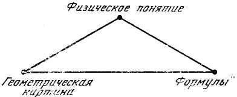
«В настоящей книге,— пишет он,— сделана попытка дать геометрической интуиции необходимое место в общей динамической теории, систематически употребляя пространство представлений, в которой движение изображающей точки соответствует движению динамической системы»34.
В результате, полагает Синг, возможно любое динамическое изменение (конфигурации, события, импульса, энергии) представить как перемещение (в соответствующем все более многомерном пространстве) и изобразить как последовательное совпадение движущейся точки и точки на неподвижной шкале координат.
Чтобы понять математическую структуру динамики, необходимо, по мнению Синга, понять геометрическую, точнее, топологическую структуру движения (как перемещения). К этой идее Синга мы еще вернемся; она очень точно выявляет замысел механических идеализации.
Еще один пример. Дж. У. Лич пишет: «В общем случае задача о движении N материальных точек может рассматриваться как задача о движении одной материальной точки, перемещающейся вдоль некоторой траектории в N-мерном пространстве»35.
Вообще-то говоря, все эти утверждения (в варианте Суслова или Лича) достаточно тривиальны. Их нетривиальность выявляется лишь в сопоставлении с апориями Зенона. И состоит эта нетривиальность, больше того,— парадоксальность, как раз в «безразличии тона», в абсолютной уверенности («как же иначе?»), что движение можно понять в геометрическом образе, пусть все более усложненном (пространство представлений), но необходимо сохраняющем свою геометрическую природу.
Правда, возможно такое утешение: дескать, классическая механика и не думает понимать движение, его сущность, она просто рассчитывает, измеряет перемещение по его результатам. Поэтому для классической механики трудностей Зенона вообще не существует. Эти трудности лежат вне поля зрения и вне теоретических задач классической механики. Но в том-то все дело и состоит, что на основе каких-то (мы еще не знаем, каких именно) идеализации и допущений понять движение означает (в классической механике) измерить его. Рассчитать значит объяснить. В классической механике «Стрела» приобретает не апорийный, но объяснительный характер, Впрочем, так же, как «Дихотомия», «Ахиллес» и «Стадий». Ведь геометризируются но только кинематические представления, любое изменение (силы, импульса, энергии, состояния) понимается в той мере, в какой оно измеряется как пространственное перемещение. Вообще-то измерить значит просто фиксировать. Это верно, но измерить любое изменение как перемещение уже означает своеобразно понять это изменение, означает особый способ объяснения.
Становится очевидным, что способ фиксации, предлагаемый классической механикой, и есть ее способ понимания; апории Зенона не обойдены, но включены в «замок» этого понимания, составляют его «шифр».
Очень точно выразил эту мысль тот же де-Бройль в «Революции в физике». Он с полной определенностью говорит о гипотетичности теоретической механики, об идеализациях, лежащих в ее основе.
Такая точка зрения, характеризует де-Бройль классическую физику, основывалась на некоторых гипотезах, которые при этом делались и справедливость которых казалась очевидной.
Де-Бройль рассматривает одну из гипотез. Она состоит в предположении, что та область в пространстве и времени, в которую мы почти инстинктивно стремимся поместить все наши ощущения, есть область совершенно жесткая и определенная, в которой каждое физическое явление может быть в принципе совершенно строго локализовано вне зависимости от динамических процессов, управляющих этим явлением.
Поэтому все развитие физического мира и могло быть сведено к изменениям пространственного положения тел со временем. Именно поэтому динамические величины, такие, как энергия и количество движения, выступают в классической физике как производные, образованные с помощью понятия скорости. Таким образом, кинематика оказывается основой динамики.
Только в квантовой механике эта гипотеза была отвергнута и апорийность механических представлений введена в состав теории.
«Точная локализация в пространстве и времени — это статическая идеализация, которая исключает всякое развитие и всякое движение. Понятие же состояния движения, взятое в чистом виде, напротив, есть динамическая идеализация, которая противоречит понятиям такого положения и момента времени.
В рамках квантовой теории физический мир нельзя описать без использования в той или иной степени какого-либо из этих двух противоречащих друг другу понятий»36.
Чтобы яснее представить те логические «приключения», которые претерпели апории движения в процессе развития механики, необходимо учесть следующее. Та гипотеза, о которой упоминает де-Бройль и которая легла в основу механики как науки, явилась результатом глубоких идеализаций, была сознательным решением, но отнюдь не бессознательным «зигзагом» мысли. Каким бы крупным ни было движущееся тело («Стрела»), какими бы крупными «блоками» ни изучалось его движение, в логическом плане проблема стояла совершенно одинаково и с той же силой перед Зеноном и Галилеем, перед Архимедом и Гейзенбергом. Строго локализовать движущееся тело (пусть мысленно локализовать его) означает остановить это тело, отождествить момент движения и точку пространственной траектории. С другой стороны, раскрыть состояние движения значит сделать неопределенными (логически неопределенными) место и момент, проходимые движущимся телом, вообще сделать проблематичными, если не бессмысленными, сами понятия «здесь» и «теперь» (граница или промежуток? Мгновенность или длительность?). Итак, мы вернулись к Бору.
Масштабы тут (для понимания сути дела) совершенно не при чем. Тем более, что для изучения механического движения в качестве особого объекта как раз и необходимо представить тело как материальную точку, материальную точку сопоставить с точкой геометрической, предельно жестко (в идеале) локализовать движущееся тело, «отвлечься» от всех других аспектов движения (как изменения, как превращения).
Проводя все эти логические операции, теоретик не мог не заметить апорий Зенона, не мог не попытаться так или иначе решить эти трудности37. Развитие механики характеризуется отнюдь не забвением того факта, что строгая локализация элиминирует состояние движения, «останавливает стрелу». Наоборот, механика всегда исходила из этой логической ситуации, на этой основе разрабатывала метод (идеализацию), позволяющий трактовать геометрию как представление движения, как теоретический образ движения. Иначе механика вообще не смогла бы существовать как наука, как теоретическая механика. Раскрыть реальный смысл этих идеализации и составит основную задачу дальнейшего анализа.
Однако, чтобы уловить этот реальный смысл механистических идеализации, необходимо понять апории Зенона как исторический факт, понять действительное историческое значение его вопросов. Только тогда можно будет подметить сам момент формирования той гипотезы, которая легла в основу классической механики.
3. Апория Зенона как исторический факт
Исторический факт — это историческая связь. Это — узелок в сложнейшей системе социальных отношений, научных и философских диалогов. Стоит вырезать узелок из сети и рассмотреть его как нечто самодовлеющее, сразу же он перестает быть узелком — и тогда этому факту можно будет дать любое, самое произвольное, толкование.
Историческим Зеноном, вошедшим в историю науки, был вопрос Зенона, не отделимый от аристотелевского ответа. Зенон аристотелевой «Физики», но не Зенон его собственных (не известных нам) произведений — вот автор тех апорий, которые действительно явились введением в историю механики.
Давно стало общим местом следующее истолкование зеноновой «Стрелы»: «Когда мы пытаемся попять движение, выразить принцип движения в понятиях, мы вынуждены сводить движение к сумме состояний покоя и, следовательно, убеждаемся, что движение не может быть понято».
Нам кажется, что это обычное истолкование не учитывает некоторых существенных исторических моментов. Парадокс в том-то и состоит, что в эпоху античности утверждение о необходимости понять движение как покой принципиально не могло вести к выводу: «...следовательно, движение нельзя понять». Наоборот, для античных мыслителей сам процесс понимания был синонимом процесса сведения текучих явлений к неизменной идеальной форме. Необходимость воспроизведения движения в понятиях покоя была для Зенона исходной предпосылкой, логической презумпцией всех его рассуждений.
Чтобы понять этот существенный момент, присмотримся, в каких реальных познавательных и предметно-практических процессах формировалось это всеобщее (для античности) отождествление сущности вещей с идеальной неизменной формой.
На первый взгляд, такое утверждение противоречит общеизвестным историческим фактам.
Любой человек, знающий историю античности, сразу же выложит десятки таких противоречащих фактов. Прежде всего нам напомнят, конечно, Гераклита. Разве для эфесского философа могло быть тождественным понимание движения и сведéние его к понятиям покоя? Ведь все обстояло как раз наоборот.
Разве не доказано, что для античного мышления вообще было характерно цельное, наивно-диалектическое радужное воззрение на мир? Разве не ясно, что нельзя превращать Зенона в Гоббса, Ньютона или Лагранжа?
Вот какое количество «разве» может набрать против нас каждый знаток античности.
И действительно, все эти «разве» имеют смысл, больше того — совершенно оправданны.
Действительно, в пределах «общего взгляда» на мир, в пределах умозрительных натурфилософских, эстетических, этических представлений, предмет воспринимался как текучее, подвижное, цельное, «живое» явление.
Это — в контексте всеобщих представлений картины мира.
Но в той мере, в какой греки понимали мир, они понимали его как чистую, статичную, тождественную себе форму.
Исключительно богатое представление о мире имело своей обратной стороной абсолютно одноцветное, «парменидовское» его понимание.
Именно своеобразное тождество наивно-диалектического представления о мире (предмете) и однозначного понимания этого мира, как «формы форм», составляет специфику античного проникновения в сущность вещей.
Так же как на небе Эллады Хаос противопоставляется абсолютной гармонии (порядку) Космоса, так на Земле Греции хаос явлений (не гармония, а именно хаос явлений) дополнялся жесточайшей иерархией, упорядоченностью форм. В той мере, в какой греки углублялись в сущность, в какой они противопоставляли сущность явлению, в этой мере сущность, коль скоро уже о ней заходила речь, представлялась как чистая форма.
Образ огня у Гераклита как раз потому и выступал одновременно в качестве художественного образа и научного понятия, что Гераклит принципиально не отделял сущность от существования; Гераклит видел в огне, в движении, в течении вещей не сущность, не явление, но их органическое тождество — действительность. «Огонь Гераклита» был первым подходом к понятию движения, т. е. к единству, диалектическому тождеству идеализованного предмета и идеи этого предмета. Однако тождество это было столь нерасчлененным, столь неспособным к внутреннему саморазвитию, что оно не могло стать исходным пунктом теоретического развития. Сущность следовало еще отделить от явления и (на первых порах) крайне жестко противопоставить ему, чтобы обнаружить ее самопротиворечивость. Необходимо было, чтобы сама сущность стала предметом познания, а следовательно, предметом понятийного воспроизведения. Для теории предмета (в данном случае — теории движения) необходимо, чтобы с предметностью отождествлялось уже не явление, а сама сущность, чтобы сущность была не только (и не столько) средством, сколько предметом объяснения. И именно здесь обнаруживалось следующее обстоятельство. Если для представления о сущности явлений достаточно было гераклитовского огня, то для понимания этой сущности как особого предмета познания годилась только одна модель — идеальная форма вещей.
Дело в том, что на основе наблюдения (этого основного для античности способа теоретического отношения к миру) только форма вещей могла мыслиться отдельно от текучих явлений, могла быть носителем единства в многообразии метаморфоз, могла объяснить устойчивость познавательного образа. Вспомним эйдолы Демокрита или отпечаток перстня на воске в самокомментариях Аристотеля. Если копнуть еще глубже, то обнаружится, что наблюдение как характерный для этой эпохи способ познавательного самоотстранения от утилитарно-практической деятельности и соответственно умение в форме вещей зафиксировать их сущность — все это определилось спецификой самого процесса труда. Или, если говорить точнее, наблюдение (1) и выделение «чистой формы» (2) входит в определение специфики предметной деятельности этой эпохи.
Процесс труда, характерный для эпохи античности, выявлял особое практически-познавательное значение формы вещей. Прежде всего в орудиях труда именно их конфигурация, геометрические пропорции имели решающее значение для характера будущей деятельности. Эти пропорции были (хотя бы в рычаге — центральном орудии всей эпохи) застывшей формой функционирования орудий. Анализ этих орудий лежал в центре внимания Псевдо-Аристотеля и Архимеда, Ктизибия, Витрувия, Герона Александрийского. Но этот анализ, в основном относящийся к эпохе эллинизма, был поздней рефлексией того начального положения вещей, которое сложилось в технике уже в VI в. до н. э.
Примерно так же обстояло дело с остальными моментами процесса труда — самой целесообразной деятельностью и предметом труда.
Причем эта особенность становится совершенно явной, если рассматривать эти моменты не поодиночке, а в их соотношении, как моменты единого целого. Это означает очень простую вещь. Целью труда могла быть в первую очередь измененная форма предметности — соответствующим образом обтесанные камень или дерево для строительства жилищ, соединение и разъединение предметов, позволяющие синтезировать необходимые контуры и размеры. Даже тогда, когда осуществлялись внутренние трансформации (металлургия), они вписывались в общий контекст трудовых процессов, осознавались как «очищение» такой скрытой, замутненной формы вещей, как об этом свидетельствуют древние трактаты по металлургии. Не случайно металлургия была обычно слита с производством готовых металлоизделий, получающихся посредством ковки, т. е. конечным ее продуктом выступал предмет определенной внутренней и внешней формы. Соответственно предметом труда выступали в первую очередь механические и геометрические свойства предмета: необходимо было изменить формы, размеры, отделить часть вещи от целого, соединить различные предметы, увеличить твердость материала и т. д. и т. п.
В процессе труда механические и геометрические свойства вещей (механика функционирования простых орудий и геометрия их формы) выступали как взаимоопределяемые, переходящие друг в друга характеристики. Форма орудия выступала как потенция его будущего функционирования. Деятельность орудия оказывалась снятой, размороженной формой вещей. Именно в этой диалектике двигались вся техника и вся наука античности.
Иными словами: процесс труда не просто определял специфический вид духовной, мыслительной деятельности, нет, сам этот труд — и по цели своей, и по приемам своим, и по последовательности операций — уже был процессом определенной идеализации, приводил к выделению «чистой» формы вещей (т. е. формы, которая полнее всего выражает функцию), к проецированию всех качественных особенностей предмета в его механические свойства — в деятельность орудия.
Вот реальная предметная основа, исходя из которой античная философия пришла к выводу: для того чтобы понять сущность предмета как особый предмет, необходимо понять сущность, как форму. Но сразу же возникла следующая серия проблем. Что означает «понять» (выразить в понятиях) форму? Как возможно сопоставить формы (сущности) вещей. И, наконец, возможно ли применить это требование к движению, возможно ли понять движения как форму? Если движение нельзя понять как форму, то сущность движения не может быть самостоятельным предметом понимания, она всегда будет растворена в текучих явлениях, короче говоря, в этом случае движение нельзя понять,— конечно, с точки зрения античного философа.
Для того чтобы осмыслить античный ответ, необходимо помнить: речь идет не о форме существования (в современном смысле слова). Тут можно было бы углубиться далее — к содержанию — и выяснить, в свою очередь, чем определяется форма. Но сейчас речь идет о форме как сущности вещей.
В этом случае форма может только самоопределяться, быть содержанием самой себя, в самой себе нести свои «причины» (ср. Пифагор). Демокрит, например, и не думал ставить вопрос, чем определяется форма атомов — это было бы для него «псевдопроблемой», совершенно бессмысленной, невозможной постановкой вопроса. Единственным способом понимания идеальной формы (именно формы, а не содержания) могло быть только измерение. Измерение должно было отождествиться с пониманием.
Однако любое измерение всегда предполагает определенное качественное тождество, лежащее в основе количественных градаций. Что же является таким качеством для чистой формы, где никакого качества как будто нет? Что измеряется в этом случае? Можно утверждать, что в определении формы как особого предмета познания качеством всегда выступает (в философии и позитивной науке) пространство и время, точнее, в форме вещей определения времени снимаются в определениях пространства.
Речь, конечно, идет не о геометрической форме, уже отвлеченной от предмета и функционирующей как момент теоретических построений (геометрии как науки). Речь идет об идеализованном предмете, о форме как сущности вещей. Анализ такой формы предполагает тождество предмета самому себе не только в пространстве, но и во времени, предполагает непрерывность существования определенной структуры связей.
Идеальная форма предмета (в античной философии) — это и есть пространственно представленная структура его временных связей. Если провести современную аналогию, то можно сказать, что такое понимание формы напоминает представление о форме жизненных процессов современной биологии. Эта форма реализуется в соотношении скоростей биохимических реакций, их временной последовательности, определяющей восстановление — в изменяющихся условиях — одной и той же пространственной, статической структуры. Такая форма — залог себе-тождественности живого тела.
Итак, идеализованное тождество временных связей пространственной структуры предмета и дает подлинную форму предмета, дает предмет как форму. Это совсем не то же самое, что чисто пространственная форма — форма, отделенная от предметности, противопоставленная ей, форма-оболочка.
Таково определение «формы — сущности» в ее отношении к «самой себе», определение сущности как предмета.
Прежде чем осмыслить определение этой идеальной формы — сущности по отношению к текучему «кратиловскому» бытию античной науки, необходимо отчетливо представить своеобразную двойную роль категории сущности в движении теоретической мысли (на любой ступени развития категориального строя науки). В той мере, в какой сущность тех или других процессов и явлений выступает — в движении мысли — в качестве предмета познания, эта сущность сама осознается в форме предметности, в форме идеализованного предмета. Эта предметность сущности (мысль о мысли) требует ее определения в категориях меры, в качественно-количественном тождестве. Вместе с тем по отношению к изучаемым процессам и явлениям сущность никакой самостоятельной предметностью не обладает и никакие качественно-количественные отношения определить ее не могут. Наоборот, сама сущность (и в этом состоит ее определение) служит основой, потенцией становления мерных, количественно-качественных отношений.
Необходимо постоянно учитывать эти обе противоположные стороны определения сущности. Если до сих пор рассматривались определения сущности как предмета, то сейчас необходимо рассмотреть определение сущности как тенденции становления мерных определений, рассмотреть определение сущности (для античной философии — идеальная форма) в системе «сущность — бытие».
В этой системе идея «сущность — форма» имеет два полюса своего воплощения в античной философской мысли. Один полюс — атомистика. Форма атома у Демокрита — это потенциальная возможность (на основе соприкосновения, порядка и поворота) бесконечного многообразия вещей, это сущность (истина) их текучего бытия.
И именно в этом отношении (в отношении сущности к бытию) становится ясным, что неделимость атома есть неделимость его формы. Формы, но отнюдь не вещества. С этим связаны и все другие определения. Атом Демокрита бескачественен, но он определяет качество всех реальных вещей и процессов. Атом — это не количество, но атомистичность (неделимая форма) лежит в основе всех количественных отношений.
Наконец, атомная структура предметов (способ соединения атомов в различных «макротелах»: камне, огне, душе) выступает реальной мерой природных вещей, и мера эта имеет своей сущностью ту же безмерную атомную форму. Лишь в бесчисленных сочетаниях (т.е. в вещах) форма атома — «контур», положение, поворот — приобретает значение меры38.
В единстве всех этих определений (как по отношению к самому себе, так и по отношению к цельным предметам) атом выступает у Демокрита предметным носителем античного понимания сущности вещей, т. е. их идеализованной формы.
Другим полюсом отождествления формы с сущностью является концепция Аристотеля. Никто из исследователей не подумает отождествлять аристотелевскую форму с геометрической абстракцией, все согласятся, что речь идет о форме предметности, о структуре связей («сплетений, сцеплений, соприкосновений, склеивания, положений, временных следований, смешений, слияний...»39) Именно эта структура отличает предметы (в действительности, а не в возможности) друг от друга. «Например, если надо определить порог, мы скажем, что это — дерево или камень, который лежит таким образом, также и про дом, что это — кирпич и бревна, лежащие таким образом; если определить лед, то — это затвердевшая уплотнившаяся таким образом вода; а созвучие — это такое-то смешение высокого и низкого тонов; и подобным образом обстоит дело и по отношению ко всем другим вещам... Форма, осуществляемая в действительности (каждый раз), равно как и понятие (такой вещи): у одних вещей это — соединение, у других — смещение, у иных еще что-нибудь из того, что было бы нами указано».
Отметим в концепции Аристотеля два момента.
1. Определяя сущность реальных предметов как единство материальной и формальной сущности (вещества и структуры), Аристотель тут же разъясняет, что в определении сути вещей, в определении их цельности достаточно указания на сущность формальную.
«...Суть бытия дана (каждый раз) в форме и действительности»40.
Материальная сущность, составляя возможность для очередного процесса формообразования, сама является формой по отношению к предыдущему процессу, сама оказывается — в своей сущности — структурой, организацией.
Вообще в философии Аристотеля (это существенно для анализа понятия движения) категория возможности оказывается раздвоенной, расщепленной. Как пассивная всеобщность (из материи можно сделать все, что угодно) возможность тождественна с содержанием и в этом смысле противостоит форме, тождественной с действительностью вещей. Как активная потенция («энергия», «энтелехия») возможность тождественна с формой, а в конечном счете — с «формой форм», с перводвигателем, с целеполаганием. Мучительное раздумье над этим двойственным смыслом категории «возможность», над ее раздвоенностью в различных логических структурах составляет внутренний нерв всей диалектики (Аристотеля), диктует своеобразный «принцип дополнительности», характерный для аристотелевской концепции движения. (Тайна этой раздвоенной возможности и детерминации этого раздвоения в недрах реальной предметной деятельности будут раскрыты в «диалоге» Зенона и Аристотеля и в заключительной главе раздела.)
Категориальная структура античной (не только аристотелевской) философии строится на таком логическом движении, которое противоположно логическому движению современной науки. В античной науке движение мысли от явлений к сущности выступает как движение от содержания к форме. В современной науке движение к сущности вещей есть одновременно движение к содержанию. Это означает, что структура предмета (форма) понимается (в своей сущности) как структура процесса (содержание). Если не учитывать это «обращение» мысли в античной философии по сравнению с привычным для нас логическим движением, то весь дальнейший анализ станет антиисторичным и в конечном счете просто бессмысленным.
2. По Аристотелю, форма приобретает статут сущности, только если соотнести структуру предмета с его целью.
«Такое-то положение камней (форма) позволяет определить «что такое порог» (ступенька) лишь тогда, когда будет учтено предназначение именно такого положения — для лестницы, для восхождения. Определенное положение кирпичей (форма) характеризует сущность дома, только если мы учтем цель этого сооружения...»41. Именно соотнесение с целью позволяет понять форму не просто как геометрическую конфигурацию, не просто как топологию предмета (сцепление, склеивание, соприкосновение...), но как назначение, смысл, сущность вещей.
Краткая реконструкция двух идеализаций, характерных для античности (Демокрита и Аристотеля), свидетельствует об общем умонастроении, стиле мышления античных натурфилософов и логиков. Демокрит и Аристотель дают этот стиль мышления в его крайних, противоположных воплощениях. Нет философов, более далеких по своей логической направленности (атомизм и непрерывность; форма как начало вещественности и форма как антипод вещественности). Именно поэтому все остальные варианты умещаются между этими двумя пределами духового спектра. Весь этот спектр, при всем различии оттенков и цветов, характеризуется одним логическим требованием: «Понять = понять форму». Требование это едино для Аристотеля и Демокрита.
Для греков было бесспорно, что понять предмет в его сущности значит понять форму предмета. Понять форму как предмет и как сущность предмета значит найти тождество качественных и количественных определений (Демокрит), найти тождество двух описаний предмета: как возможности и как действительности (Аристотель). И то и другое тождество реально улавливалось и могло быть предметно фиксировано только в процессе измерения. То, что сама функция измерения носила двойную нагрузку: быть способом понимания формы (сущности) как идеализованного предмета и быть следствием такого понимания в процессе измерения «макротел» — это обстоятельство, конечно, ускользало от внимания античных философов.
Такова реальная логическая ситуация, в которой могли зародиться и в которой могут быть поняты апории Зенона. Весь дальнейший разговор о Зеноне должен постоянно соотноситься с демокритовскими и аристотелевскими представлениями о форме. Однако вопросы Зенона не были вместе с тем чисто натурфилософскими.
Вне зависимости от субъективных намерений Зенона, его вопросы объективно выражали проблему, так сказать, прикладного характера. Проблема стояла так: каким образом возможно (и возможно ли) использовать типичную для античности «модель понимания» в целях построения механики — позитивной науки о движении?
Форма — это средоточие той категориальной системы, в которой осуществлялось во времена Зенона — Аристотеля — Архимеда теоретическое освоение мира. Но раз так, то и движение должно было в сущности своей предстать как форма, т. е. должно быть выражено в пространственно-временных понятиях как исходных, изначальных.
Всей этой сложной логической ситуации, всего своеобразия античной логики обычно не учитывают исследователи апорий.
Для современных исследователей вывод Зенона о невозможности понять движение непосредственно тождественен утверждению, что движение сводится (логически) к покою.
Для Аристотеля (для античной науки) апории Зенона имели смысл совсем другой — смысл постановки задачи.
Апории движения получали в сознании античных мыслителей не скептический, а проблемный характер. «Чтобы движение понять, его необходимо выразить в понятиях формы» — это требование античной логики выступало необходимой предпосылкой всех дальнейших рассуждений. Проблема состояла в другом: каким образом в определениях формы (пространство, снимающее время, количество, снимающее качество) возможно дать описание движения и объяснить возможность движения?
Вот это самое «каким образом возможно?» современные исследователи Зенона обычно забывают.
Между тем спор Зенона, Аристотеля и современного историка диалектики может быть представлен только как спор вокруг способа воспроизведения движения (перемещения) в понятиях покоя (формы). Конечно, современный диалектик мог бы оспорить и предпосылку античной логики («понять значит воспроизвести как форму»), но такой спор был бы антиисторичен и бесполезен.
Позиция историка диалектики в этом предполагаемом споре должна быть иной. Его голос должен вносить историзм. Ему нужно осмысливать трудности Зенона как момент развития диалектики, как первый опыт воспроизведения «в понятиях» сущности движения, противоречий движения. Прислушаемся теперь к диалогу «Зенона» и «Аристотеля» как к реальному историческому факту.
4. Диалог между Зеноном и Аристотелем об апориях движения
Попробуем представить, как протекал бы диалог между «Зеноном» и «Аристотелем» об апориях движения42. При этом то, что будет говорить Зенон, дается в изложении его взглядов Аристотелем, т. е. в форме вопроса — как его поняла история науки. Этот подход хорошо выразил Гегель: «Мы должны понимать аргументы Зенона ... как указание на необходимый способ определения движения и на ход мысли, который необходимо соблюдать при этом определении»43.
Приводимые ниже «ответы» Аристотеля — это прямые и «смысловые» цитаты из его «Физики» и «Метафизики», кое-где дополненные «связками» и переходными предложениями44.
Зенон. Попытаемся сначала выразить в понятиях пространства и времени само состояние движения. Выразить движение как состояние, как наличное значит представить его «в настоящем времени», происходящим «теперь». Это значит, далее, представить движущееся тело находящимся «здесь», занимающим место, равное его собственной величине. Второе утверждение полностью вытекает из первого. Каждое мгновение времени («теперь», «настоящее») неделимо, иначе оно включало бы в себя что-то из будущего и что-то из прошлого, т. е. не было бы настоящим моментом, было бы длительностью. Но поскольку «теперь» неделимо, не имеет длительности, постольку тело не успевает «переместиться», изменить свое место, а значит, его пространственный «отпечаток» на геометрической шкале в каждое «теперь» равен его собственным размерам.
Пространственное представление движущегося тела в каждый момент полностью тождественно неподвижной геометрической форме. Поскольку время состоит из мгновений, из «теперь», то временной «образ движения» — это сумма тождественных «теперь», т. е. непрерывное настоящее.
Оказывается, что измерить движение значит отмерить на неподвижной шкале какое-то количество (исходя из числа «теперь») одинаковых отрезков, длина каждого из которых равна длине стрелы. Измерение движения просто сводится к измерению пространства. Отношение «здесь» и «теперь» (образ движения как состояния) не дает идеи движения, не содержит возможности движения, сводит изменение тела к «изменению» места. Попутно выясняется, что идея времени (смены прошлого, настоящего и будущего) также иллюзорна, реально существует только бытие, только настоящее, только единое.
Аристотель. Конечно, Вы правы, что «теперь», взятое не по отношению к другому, а по отношению к себе, является неделимым, ибо в противном случае в будущем будет часть прошедшего, а в прошедшем — будущего.
Я согласен также, что «теперь» всегда одно и то же. Правильно и то, что в «теперь» нет никакого движения, ибо иначе мгновение не было бы неделимым45. Поэтому бесспорно, если бы время состояло из «теперь», если «теперь» (мгновение настоящего) можно было бы рассматривать как актуальную частицу времени, тогда Вы были бы правы: воспроизвести движение в понятиях пространства и времени было бы невозможно. Но все дело в том, что время не состоит из отдельных «теперь». «Теперь» вовсе не является частицей времени. Вы заранее предполагаете то, что хотите доказать, исключаете из анализа движения будущее и прошедшее, их переход друг в друга, исключаете возможность изменения.
Все дело в том, что движение нельзя рассматривать только в настоящем времени, т. е. только как состояние. Время, в котором происходит движение,— это всегда переход из одного «теперь» в другое, всегда превращение настоящего в прошедшее. Движение и есть реальное осуществление того, что является возможным, поскольку оно возможно. Исключив из времени движения прошлое и будущее, Вы заранее исключили само движение. Если же учесть, что любое время движения — это длительность, процесс временных превращений, то все Ваши силлогизмы рушатся. Движение может происходить и происходит.
Конечно, нельзя сказать, что стрела движется во вневременном «теперь» — в настоящем, отрезанном от прошлого и будущего, но тогда нельзя сказать и то, что стрела «теперь» покоится. Сказать, что предмет покоится, фиксировать состояние покоя, возможно, только если учитывается «прежде» и «после». …Предмет покоится — значит за время «от» и «до» он не передвигается, не изменяет своего места. Но в «теперь» нет ни «прежде», ни «после», нет времени, а следовательно, нет ни покоя, ни движения.
Опираясь на понятие «теперь», нельзя утверждать ни то, что летящая стрела покоится, ни то, что она движется.
Зенон: Мне неясно Ваше утверждение, что время не состоит из «теперь». Из чего же оно тогда состоит? Но оставим это сомнение пока в стороне. Возьмем основную проблему.
Вы считаете, что время выражает свою природу в цикле: будущее — прошлое, я полагаю, что статутом действительности (движения) обладает только настоящее. Прошлое и будущее позволяют говорить лишь о возможности движения (будущее) и о совершившемся, законченном движении (прошлое). И в том и в другом случае реального движения нет. Поэтому невозможность понять движение как состояние, в категориях «теперь» (а Вы сами признали, что это невозможно) уже свидетельствует о невоспроизводимости движения в его действительности. Если быть последовательным, придется согласиться со мной: есть только бытие (это ведь просто тавтология, но ее необходимо принять), только настоящее.
Настоящее неделимо и вместе с тем непрерывно, в нем совпадают те две идеи, которые обычно осмысливаются как противоречащие друг другу, непрерывность и неделимость времени и пространства. Противоречие непрерывности и неделимости вспыхивает, когда мы пытаемся теоретически воспроизвести феномен движения, неизбежно) делящего на части (бесконечные части) непрерывную глыбу мира, глыбу неподвижного бытия.
Движение и множественность — это два воплощения одной апории.
Итак, мне кажется ясным: понять (=измерить) движение как действительность — невозможно. Но примем, на минуту. Ваш тезис («время не состоит из «теперь»») и попытаемся выразить в понятиях (понять) движение как возможность. «Движение есть» — это предложение оказалось самопротиворечивым. Посмотрим, как обстоит дело с утверждением «движение возможна».
Как только мы примем идею о том, что время не состоит из «теперь», что любое мгновение обладает длительностью, так сразу же одна трудность («Стрела») превращается в другую («Ахиллес» или «Дихотомия»). Предположим, время — это длительность. Тогда, действительно, за промежуток времени (скажем, за 10 секунд, за секунду, за 1/1000 секунды и т. д.) стрела успеет передвинуться и ее «место» (за это время) не будет тождественно ее геометрической длине. Это приходится признать. Но прежде чем стрела продвинется на то расстояние, которое она могла бы (!) пройти за 1/1000 секунды, ей приходится продвигаться на половину этого расстояния, на половину этой половины и т. д. Движение не может начаться, а Ахиллес напоминает Вам, что оно не может кончиться (логически рассуждая, конечно).
В понятиях пространства и времени нельзя выразить не только существование движения, но и его возможность. Отношение
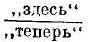
не может быть мерой движения (это мы уже видели в «Стреле»). Теперь же оказывается, что такой мерой не может быть и отношение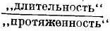
.Кстати, я решительно отвергаю Ваше возражение (в «Физике»), что я, утверждая бесконечность пространственного деления, якобы не замечаю бесконечности любого временного промежутка. Если бы я его учитывал (в «Дихотомии», например), то я понял бы, дескать, что движение возможно, поскольку за бесконечное время путник пройдет бесконечное расстояние.
Однако это возражение бьет мимо цели.
Дело вовсе не в том, что я заставляю Ахиллеса пройти бесконечное пространство за конечное время. Право, я не мог бы допустить такой элементарной ошибки. Дело в другом: природа бесконечности пространства иная, чем природа бесконечности времени. Как скажет будущий исследователь этой проблемы Уитроу, «в одном случае (время) речь идет о событиях, в другом (пространство) — о местоположениях»46.
Время динамично, текуче по своей природе. Ситуацию не спасает и актуальная бесконечность. «Из того факта, что весь интервал времени, который отпущен ему [Ахиллесу] для этого деяния, имеет конечную меру, еще не следует автоматически вывод о том, что он в самом деле может исчерпать эту последовательность. Как правильно ... отметил У. Джемс ... «критика Зеноновых соображений совершенно не попадает в цель. Зенон охотно согласился бы, что если черепаху вообще возможно догнать, то ее можно догнать..., например, за двадцать секунд, но тем не менее он настаивал бы, что ее нельзя догнать вообще». Даже согласие с канторовской теорией обязывает нас точно различать бесконечное множество положений (которое Зенон рассматривает, анализируя движение черепахи и которое обязан пройти Ахиллес) и последовательность актов их прохождения. Допуская возможность рассмотрения первого как совокупности, мы не можем сделать вывода о законности такого рассмотрения последней, поскольку хотя первое может мыслиться как статическая или завершенная бесконечность, последняя именно по своей природе должна рассматриваться только как бесконечно возрастающая, динамическая или незавершенная бесконечность»47.
Надеюсь, Вы меня не упрекнете в модернизации. Вам прекрасно известно, что и Парменид, и я, и Платон, да и Вы тоже, строили многие свои выводы на своеобразной природе времени. К сожалению, эту суть спора забыли наши последующие комментаторы, они исключили из своего рассмотрения идею времени, идею движения и свели весь спор к чисто количественным проблемам (и «погрешностям»). Уитроу прав, когда он утверждает, что речь идет совсем о другой проблеме, пока еще не решен «вопрос об отношении математической формулировки к действительной проблеме времени и движения, которая рассматривалась Зеноном»48.
Итак, если не упрекать меня в элементарной софистике, то становится ясным: утверждение о возможности движения столь же иррационально, как и утверждение о существовании движения. Речь, конечно, идет, не о возможности сосчитать бесконечность пространственного ряда, но о возможности пройти эту бесконечность.
Аристотель: Не буду с Вами спорить по частностям. Я сам указывал, что для возражения Зенону недостаточно подчеркнуть возможность пройти бесконечную величину за бесконечное время. Если кто оставит в стороне длину и будет рассматривать проблему по отношению ко времени, то у меня будет другое возражение. Дело в том, что в Вашей «Дихотомии» Вы опять-таки заранее остановили движение, прервали его, а потом доказываете невозможность его воспроизведения.
Конечно, следуя Вашей логике, воспроизвести движение невозможно. Мысленно разделив непрерывное течение времени пополам, Вы в этой точке деления уже остановили движение. Только если заранее остановить движение, потенциальное разделение времени и пространства (на абсолютно дискретные единицы) станет актуальным делением, и тогда движение,— но его уже нет,— станет невозможным. Кто делит непрерывную линию на две половины, тот пользуется одной точкой как двумя, так как делает ее началом и концом. Точка раздела оказывается промежутком (времени или пространства), в котором тело покоится. В действительности и «точка» и «теперь» потенциально делят, но актуально соединяют последующие точки, последующий и предыдущий моменты, оказываются соединением двух точек в одну, двух моментов времени в одно «теперь».
«Точка» и «теперь» — это не разделение, но связь. Именно благодаря такому свойству непрерывности и возможно движение. Вот почему я и утверждаю, что Вы заранее мысленно делаете то (останавливаете движение), что затем стремитесь доказать. Можно ту же мысль выразить иначе.
Вы подменяете измерение — счетом49. Измеряем мы величину, нечто непрерывное, и наше разделение этой величины пополам будет чем-то произвольным, внешним для самой величины, это не будет актуальным ее разделением. Другое дело — считать отдельные предметы, которые актуально выступают как дискретные единицы счета. Вы же под видом измерения движения начинаете считать точки как отдельные предметы, как естественные единицы. Но линия не состоит из точек (одна, плюс другая, плюс третья...). Так никакая линия не составится, она, грубо говоря, «рассыпется».
Время не состоит из «теперь». В результате такой подмены и получается, что органически непрерывное (движение) подменяется бесконечно делимым, линия подменяется россыпью точек, пересчитать которые невозможно. Впрочем, в XX в. Вашу подмену обратят против Вас, опираясь на канторовские понятия актуальной бесконечности, будут говорить о завершенности бесконечного ряда, забывая, что линия — это не совокупность точек, а след движения точки, т. е. нечто единое, неделимое и именно в этом смысле (а не в смысле бесконечной делимости) — непрерывное.
«Таким образом, на вопрос, можно ли пройти бесконечное число частей во времени или по длине, следует ответить ... если они (части) будут актуальны — нельзя, а если в потенции — возможно.
Бесконечное число половин в линии есть для нее нечто акцидентальное, а сущность и бытие ее иные» (т. е. в сущности — линия едина, неделима, одна).
...В непрерывном заключено бесконечное число половин, но только не актуально, а потенциально»50.
Это означает, что непрерывное непрерывно как движение (и в этом смысле — неделимо). Непрерывность измерения (бесконечная делимость) — это лишь способ внешнего, произвольного воспроизведения уже завершенного движения. Потенциальное (разделение) мы представляем как завершенное, чтобы обеспечить возможность измерения. Причем это измерение не останавливает движения, поскольку оно уже завершилось. В этой проекции) уже нет «теперь», а есть только время, законченное время, «время как число движения — не то число, посредством которого мы считаем, а то, что считаемо в движении»51.
Вернемся теперь к нашей исходной задаче: как выразить движение в неподвижном, как в измерении движения раскрыть его возможность?
Задача именно такова, тут у нас нет разногласий, мы оба абсолютно уверены, что понять движение значит понять его как форму, как нечто вечное и неизменное. Вы считаете, что это неразрешимая задача, поскольку или приходится прийти к Вашим апориям, или, если прислушаться к моим аргументам,— отказаться от понимания (измерения) движения как действительности, точнее, в настоящем времени, поскольку действительность и бытие в настоящем — для меня не тождественные понятия.
И все же я думаю, что трудность эта преодолима.
Измерение пассивной возможности движения (формы орудия, иерархии тел), совмещаемое с измерением потенции движения, его целенаправленности, будет служить средством измерения актуального движения, которое непосредственно измерить (понять) невозможно. Причем предлагаемая мною идея соответствует самой сущности движения, его природе.
Прежде всего реальный процесс движения необходимо определить через возможность — как процесс осуществления возможности. Изменение качества — это движение в какое-то новое, пока еще только возможное качество. «Почернение» может быть понято (в каждый данный момент) только если мы знаем, во что происходит превращение — «в черное», в «черноту». Изменение места есть стремление занять определенное место, есть движение к этому месту, или, точнее, в это место.
Возможность — это, конечно, еще не движение, но движение — это превращение возможного («черное» как возможность) в действительное («черное» как действительность). (Принять саму возможность за движение, считать возможность действием, потенцией было бы безусловно неверно: ведь тогда движение страдало бы той неопределенностью, которая присуща самой возможности52. Чтобы возможность движения превратилась в собственно движение, необходима внешняя активная сила, выводящая тело из состояния равновесия, покоя). Но пойдем дальше.
Движение переносит тела из одного места в другое, из одного состояния в другое. Перемещение — это не процесс движения (вот Ваша основная ошибка, Зенон), перемещение — это интегральный образ. Исходная точка этого образа — не то, что характеризует «начало движения» (его действительно не обнаружить), но то, что предшествовало движению как его возможность (естественное место). Конечная точка этого интегрального образа — новое естественное место — не окончание движения, но состояние, наступившее в результате движения. Воспроизвести этот интегральный образ вполне достаточно, чтобы понять все движение. Вот Вам и выход из всех трудностей.
Ведь возможность движения — это нечто само по себе неподвижное. Предельные формы, между которыми происходит движение, остаются неизменными. Не теплота является движением, но — нагревание, не знание, но — познание. Эти предельные формы вполне могут быть выражены в понятиях покоя, они определяются через положительные высказывания.
Вы пытались все время выразить в понятиях покоя состояние движения (или его начало, т. е. также уже состояние). Это действительно принципиально невозможно. Кроме того, это не будет воспроизведением сущности движения, но только воспроизведение частного случая, явления. Необходимо (и возможно) другое: воспроизвести в понятиях покоя, в «спокойных» понятиях пространства и времени не состояние, но возможность и потенцию («форму») движения, а тем самым его сущность.
Иными словами, для того чтобы выразить движение в понятиях покоя, необходимо покой представить как возможность движения, как потенциальное движение. Так стоит задача. Вы подчеркнули лишь первую ее половину (первое условие), и поэтому эта задача оказалась принципиально неразрешимой. Мое представление о движении делает принципиально возможным разрешить все Ваши трудности, не отказываясь вместе с тем от исходного условия, от необходимости дать геометрический образ (неподвижность) движения (изменчивости).
Конечно, все, что я сейчас сказал, это только очень общий и абстрактный набросок предлагаемого решения. Сразу же возникает очередная трудность. Где же найти ту форму, то состояние покоя, которое потенциально содержит в себе любое перемещение, причем не просто набор этих возможностей, но их порядок, последовательность, нарастание?
Какая же идеальная форма будет спокойной «записью» всех степеней движения как перемещения и всех переходов между этими степенями?
Сразу же напомню, что хотя и я признаю изменение качества и количества, но исходным, первым движением, объясняющим все остальные, признаю только перемещение (в «Физике» и «Метафизике»). Количественный рост невозможен без качественных изменений, а качественные изменения имеют своим источником перемещение, в том смысле, о котором я выше говорил (хотя бы как сгущение [и разрежение).
Где же эта идеальная форма, измерение которой будет измерением движения во всех его степенях и переходах? Где же та пространственная конфигурация, которая способна выражать форму движения и форму временного потока? Мне представляется несомненным, что эта форма — круг, диск, шар.
«Шар движется и в известном отношении покоится, так как он всегда занимает одно и то же место. Причиной служит то, что все это вытекает из свойств центра: он является и началом, и серединой, и концом всей величины, так что, вследствие его расположения вне окружности, негде движущемуся телу успокоиться... оно все время движется вокруг середины, а не к определенному концу, а вследствие этого целое всегда пребывает в покое и в то же время непрерывно движется.
В катящемся диске различные точки одного тела движутся скорее или медленнее в точной зависимости от своего расстояния до центра — подвижного и неподвижного в одно и то же время...»53
Я понимаю, что выражаюсь загадочно и велеречиво, как египетский жрец, но думаю, что именно в идее круга можно найти возможность воспроизвести движение как форму. Правда, идею круга необходимо, очевидно, как-то соединить с основной идеей любого движения — идеей перемещения как восстановления равновесия, как возвращения к «естественному месту». Впрочем, это уже выходит за пределы нашего диалога.
Зенон. И все же я продолжаю утверждать, что Ваше решение апорий — это благое пожелание («а что было бы если бы ...»).
Посудите сами. Спор шел о том, возможно ли воспроизвести в понятиях покоя — движение как процесс, как действительность? Это — первое. И — второе: возможно ли осмыслить саму возможность движения, т. е. возможность его начала, завершения, протекания? Вы предлагаете такое решение: в понятиях покоя возможно воспроизвести движение как возможность и как проект, цель, план. Но, простите меня, это совершенно незаконный прием.
В первом случае Вы должны раскрыть саму действительность движения (оно уже происходит) в свете его логической возможности, т. е. в свете соответствия законам логики. Вы должны далее раскрыть логику перехода от покоя к движению, логику «начала» движения (отвечая хотя бы на апорию «Дихотомии»). Вместо этого Вы доказываете, что можете воспроизвести в понятиях покоя состояние покоя, чреватое движением, и состояние покоя, завершающее процесс движения, но не можете показать, как начинается движение, как оно может протекать, как оно может закончиться. Я абсолютно уверен, что раскрыть в понятиях движение как возможность и не раскрыть его как действительность, как переход из возможного в действительное (переход, в самой возможности заключенный, а не навязанный извне) это и означает признаться, что движение (именно движение, а не его возможность) в своей сущности не воспроизводимо в понятиях, т. е. не можете быть понято.
Для меня, Парменида и Ксенофана причина Вашей неудачи совершенно ясна: действительность движения не воспроизводима, поскольку она противоречит действительности бытия, противоречит всеобщности сущего. Только тот, кто раскроет действительность небытия, бытие небытия (а это — абсурд), только тот сможет понять феномен движения. Чтобы понять движение, необходимо осмыслить его как тождество сущего и не существующего, бытия и небытия, что бессмысленно и невероятно.
5. «Апория Зенона — Аристотеля» и проблема движения
Такова логическая ситуация (борение в умах античных мыслителей логики Зенона и логики Аристотеля), в которой формировалось теоретическое понимание механического движения54.
Именно в «споре» Зенона — Аристотеля проблема движения приобретает подлинно апорийный характер и становится реальной научной проблемой. Эта действенная, работающая апория (назовем ее «апория Зенона — Аристотеля») означала следующую коллизию. Пытаясь понять (воспроизвести в понятиях) реальный процесс перемещения (механического движения), мы неизбежно приходим к выводу, что понятие перемещения, требующее признать самостоятельное существование времени и пространства, противоречит понятию движения, делает движение невозможным.
Процесс движения может быть понят не как перемещение («здесь», а затем — «там»), но только как тождество бытия и небытия («есть» и «не есть»), как становление. Но это тождество есть нечто (для античности, да и для классики) неуловимое, невоспроизводимое, неизмеримое, не могущее быть объектом точной науки. Это — с одной стороны. С другой стороны, пытаясь понять перемещение как возможность и как результат, мы сможем нечто измерить, изучить, осмыслить, но мы все же будем изучать и измерять не процесс движения, а только мысленные проекции — в будущее и прошедшее время — состояний покоя и пространственных конфигураций.
Измерение движения подменяется, по сути дела, движением измерения. Но что будет в этом случае измеряться, делиться, увеличиваться? Пространство и только пространство. Само время становится лишь тенью пространственных понятий. Как дерево в яркий солнечный день отбрасывает на землю плоскую тень, так пространство пройденного пути или потенциальных перемещений отбрасывает тень истекшего времени55. Движение из предмета изучения превращается в средство изучения, в средство познания пространства.
Апория Зенона — Аристотеля лежит в основании всех антиномий последующего развития механики, поскольку она ставит задачу выразить, воспроизвести противоречия становления в форме противоречий перемещения. В этой апории познание встало у порога научного понятия, у порога теории.
Зенон понял, что в понятии «перемещения» сущность движения не может быть понята, не может быть адекватно воспроизведена.
Аристотель, уточнив эту сущность (становление, тождество бытия и небытия, возможности и действительности), наметил основу тех идеализаций (вспомним анализ де-Бройля), которые позволили все же, хотя и в неявной форме, сводить становление к перемещению. Эти идеализации сделали впоследствии возможным развитие механики как науки.
«Ответы» Аристотеля, с одной стороны, заострили всю логическую ситуацию, вскрыли всю глубину логических трудностей, угаданных Зеноном. Эти ответы подчеркнули геометрический характер назревающих механических идеализаций, решительно вычеркнули из идеализованной картины движения настоящее время, проблему начала движения. Проблема начала или должна была разрешаться где-то вне движущегося тела (перводвигатель), или вообще снималась с повестки дня, исключалась из науки. На многие века предметом анализа (при изучении движения) становилось потенциальное и снятое время, потенциальное и завершенное движение, т. е. движение в форме пространства. Именно поэтому апории Зенона неизбежно должны были вновь и вновь возрождаться — уже в форме антиномий внутри непротиворечивого (внешне непротиворечивого) здания античной, а затем — классической механики.
Но вместе с тем ответы Аристотеля не были искусственной конструкцией, не были простым (пусть и очень полезным) познавательным приемом. Эти ответы таили в себе крайне плодотворную, содержательную, логическую потенцию. Именно эта потенция и привела к формированию той гениальной гипотезы, которая легла, по мысли де-Бройля, в основу двухтысячелетнего развития физической науки, вплоть до научной революции XX в.
Дело в том, что изучение движения как пространства оказывалось вместе с тем изучением пространства как движения. Чем более механика (и далее физика) оказывалась своеобразной геометрией, тем более геометрия приобретала физический характер, а пространственно-временные координаты приобретали физический смысл (в «пространстве» различных представлений). Нам кажется, что процесс этот гораздо более существен в методологическом отношении, чем обычно представляют.
Во-первых, этот процесс позволяет понять действительный предмет механики как науки. Этот предмет — отнюдь не перемещение в пространстве (это лишь видимость), это — само пространство как движение, пространство как всеобщая форма (одна из форм) существования движения. Соответственно задачей механики по отношению к другим наукам и являлось изучение закономерностей геометрического толкования физики (химии, отчасти — биологии). Именно так и наметился путь к формированию понятия механического движения. Сознавали это отдельные ученые или нет, но фактически предметом механики было пространство в его действительной сущности, т. е. как определение движения. И этому предмету вполне соответствовала основная идея механики — идея «физикализации» геометрии.
Во-вторых, изучение этого процесса формирования механики позволяет подчеркнуть одну существенную методологическую идею.
Пространство и время — это не две самостоятельных, наряду с движением, формы существования материи. Это — два противоположных определения движения — как тождества бытия и небытия, существования и несуществования. Познать движение означает познать взаимосвязь, взаимодействие существующих вещей, ставшего мира (=пространство)56. Познать движение означает познать становление, возникновение мира (=время). Мир существует извечно, всегда (пространство), мир постоянно возникает и становится заново (время). Тождество движения и покоя (основная идея механики) — только внешнее, в перемещении отраженное воплощение того глубинного, существенного тождества, которое присуще самому движению,— тождества взаимосвязи и становления, тождества прерывности и непрерывности существования вещей.
Механика может быть названа содержательной логикой на определенном этапе развития логики именно потому, что механика изучает одно из всеобщих определений движения — пространство, причем изучает пространство именно в связи с движением, но не просто как геометрическую форму.
Пространственная взаимосвязь вещей изучается механикой и со стороны потенциального движения (движение зависит от природы связей того или другого предмета), и как снятое, завершенное движение, отпечатанное в связях, «замороженное» в пространстве.
Но как же обстоит дело со второй проекцией движения — становлением, воплощенным в течение времени, какая наука, на основе каких идеализации изучает, развивает, углубляет это — противоположное пространству — определение движения?
Вопрос этот необходимо, хотя бы вкратце, разрешить потому, что без этого не может быть до конца понято историческое значение апории Зенона — Аристотеля. Ответ на этот вопрос очень прост: механика смогла возникнуть и развиваться только за счет экспансии во время, за счет поглощения второй проекции движения. Первым актом «физикализации» пространства была «геометризация» времени. Эта геометризация отнюдь не уничтожала ни идеи будущего времени, ни идеи прошедшего, завершенного временного промежутка.
Наоборот, именно введение понятия длительности, наряду с протяженностью, и позволило изучать в пространстве движение. Геометризация времени снимала только одно измерение времени — мгновение настоящего, снимала всего-навсего идею становления. Собственно, в этом и заключалась геометризация времени. Стоило представить мгновение настоящего не как связь времен, не как переход, не как процесс, но как своеобразный время-раздел, как нечто, не имеющее ни измерения, ни реального содержания, как непротяженную точку «смыкания» прошлого и будущего, как сразу же время полностью и целиком геометризировалось. Прошлое время — это уже не время. Будущее время — это еще не время. Время — это их взаимопереход, взаимопревращение, время — это становление времени. Но ведь именно этот переход, превращение, становление и составляет действительный, содержательный статут настоящего, мгновения. Вот почему сведение мгновения к нулевому времени и означало абсолютную геометризацию времени. А далее все было уже возможно.
Стоило теперь «перегнуть» время по «линии» настоящего и наложить друг на друга потенциальное и прошедшее время, как оказывалось возможным считать, измерять, исчислять движение, рассматривать время как «число движения» (Аристотель), как «четвертое измерение пространства» (Лагранж), как. независимую (от движения?) переменную (вся современная механика). В этом смысле, безусловно, прав Гамильтон, определяя алгебру как науку о времени, что созвучно аристотелевскому положению «время — это число движения». В этом смысле понятно, почему в течение веков отсутствовала специальная наука о времени.
Сейчас такая наука уже могла бы возникнуть, но сейчас ей нет нужды возникать. Движение, научно определенное через два противоположных определения, уже раскрывается в своей действительной сущности, в тождестве пространства-времени, взаимосвязи-становления... Стоило дополнить идею «пространственно-подобного времени» идеей «времени-подобного» (становящегося) пространства, как существование особой «хронографии», этой не возникшей еще дисциплины, оказалось делом ненужным и бессмысленным.
Но вернемся к апории Зенона — Аристотеля. Та идея, при помощи которой было возможным решить эту апорию, т. е. идея геометризации физических величин, и в первую очередь времени, не могла (принципиально не могла) разрешить одной трудности, а именно — проблемы начала движения. Подмена тождества прерывности и непрерывности существования вещей тождеством бесконечной делимости и дискретности пространства и времени (чисто количественная сторона дела) дорого стоила науке.
Во-первых, бесконечная делимость пространства и времени всегда оказывалась каким-то внешним, извне проводимым «регрессом» в бесконечность, вновь и вновь возрождая апории Зенона, возрождая абстрактную антиномичную противоположность непрерывности и дискретности. Движение как действительность оказалось не воспроизводимым в понятиях. Постоянно приходилось прибегать к потенциальному и снятому движению (возможному, но не действительному).
Во-вторых (и это как раз объясняет, почему апории вновь и вновь возрождались), исключение из анализа движения идеи настоящего, идеи становления заставляло разрывать возможное движение и движение законченное, а тем самым разрывать объяснение движения и его описание, источник движения (или источник изменения движения) и движение как процесс. Не в себе самом, но вне себя движение несло причину своего самовозобновления. И это было неистребимым злом.
Ведь вопрос о переходе от покоя к движению, о возможности движения возникал не только в пункте формального сначала» данного процесса. Тут можно было отделаться рассуждением о внешних силах, толчках, воздействиях, а для механики Ньютона можно было и совсем «снять» этот неприятный вопрос, ссылаясь на принцип инерции. Но вопрос этот логически стоит по отношению к каждому моменту движения, поскольку строгая локализация движущегося тела в данной точке пространства (пусть мысленная локализация) заставляет рассматривать тело как покоящееся и в то же время как движущееся.
Каждый момент движения является моментом перехода от покоя к движению, должен нести в себе начало движения. Ведь в том-то и сила апорий Зенона (так и не решенных, но углубленных, усложненных Аристотелем), что дихотомия относится не только и даже не столько к исходному пункту движения, но к каждому его моменту. И тут уже не могла спасти никакая инерция и никакая самая абсолютная пустота. Две проекции движения (как возможного и как завершенного), сколько раз они ни накладывались бы друг на друга, могли дать лишь формальное, но не содержательное описание и объяснение движения. Причем описание и объяснение каждый раз снова расщеплялись и противопоставлялись друг другу: первое опиралось на идею истекшего времени, второе — на идею двигателя, или, выражая ту же мысль несколько иначе,— на идею взаимодействия. Однако это расщепление «не беспокоило» и даже, напротив, облегчало познание движения (механического) благодаря двум идеализациям, которые и легли в основу той гипотезы, о которой говорил де-Бройль.
Обе эти идеализации, по сути дела, наметились (но только наметились) уже в споре Зенона — Аристотеля, и поэтому сейчас самое время о них сказать.
Первая идеализация. Уже Аристотель подчеркивал, что «движение делимо по времени и по частям тела»57 (при этом он имел в виду, что реальное тело перемещается не все целиком, сразу, но по частям). От крайней точки, крайнего среза тела толчок, возбуждение передаются последовательно, с «запаздыванием», всему предмету. Поэтому, полагал Аристотель, логический анализ начала движения требует учитывать не все тело, а его крайний «срез», т. е. требует отвлечься от того, что движется, сведя движущееся тело к неделимой, бескачественной точке. Предметом изучения становится в результате не движущийся предмет, но само движение как предмет. Эта идеализация легла затем в основу всех построений механической теории, хотя аргументация оказалась прямо противоположной аристотелевской: поскольку все тело передвигается сразу, от его величины можно отвлечься.
Такая идеализация считалась возможной и необходимой, поскольку: а) предполагалось, что тело в процесс перемещения не изменяется, а поэтому от его качественной природы можно отвлечься; б) учитывалось, что изучение самого предмета, который двигается, требовало бы остановить, прервать движение, т. е. устраняло бы сам предмет механики как науки; в) движение вообще нельзя представить непрерывным, не представив само перемещение как геометрическую линию (континуум точек-моментов), что исключает возможность учитывать размеры движущегося тела.
Выполнив условия этой идеализации, исследователь избавился от необходимости учитывать эффекты становления, тождество прерывности и непрерывности существования предмета, поскольку сам предмет был целиком и полностью сведен на нет, элиминирован. Но вместе с тем устранялись и все трудности начала движения, поскольку в геометрическом образе (представляя движение как траекторию) проблема начала сводится к механическим операциям при помощи карандаша и циркуля, которые выступают не предметом размышления, а орудием действия.
Вторая идеализация. Когда диалектики, возражая Зенону, утверждавшему, что стрела в каждое «теперь» находится «здесь», разъясняют, что движущаяся стрела «теперь» находится «здесь» и «не здесь», то они не замечают одной тонкости, лишающей это возражение всякой силы. Если сохранить такую редакцию, то правы их оппоненты. Сказав, что стрела в данное мгновение («теперь») находится «здесь», мы не имеем права утверждать, что она одновременно находится «не здесь». Не имеем права так утверждать потому, что наше «теперь» пока еще не диалектично, абсолютно, геометризовано, абстрактно, тождественно самому себе. Диалектическая формула должна была бы быть иной: «Стрела находится и не находится «здесь», поскольку она существует «теперь» и «не теперь»» (!).
Мы не имеем права диалектизировать положение летящей стрелы («здесь» и «не здесь»), пока мы не диалектизировали время («теперь» и «не теперь»).
Как только мы выразили нашу мысль, подчеркнув диалектический характер времени («теперь и одновременно «не теперь»), мы сразу же ввели идею становления, идею, что это мгновение является одновременно и настоящим и будущим, сразу же ввели возможность движения. Но тем самым мы сделали бессмысленной идею перемещения, механического движения. Пока стрела находится «здесь» и «не здесь», но в каком-то абсолютном «теперь» — это еще механика (теоретическая механика) со всеми ее антиномиями, а время выступает в обычном своем качестве независимой переменной (зависимой от идеи пространства). Если же тело существует «теперь» и одновременно «не теперь» — в другом мгновении, то, строго говоря, следует говорить об этом теле уже не в чисто пространственных понятиях — «здесь» и «не здесь», но в понятиях существования: тело есть и не есть, существует и не существует. Пространство теряет чисто геометрический статут, становится «времени-подобным», обнаруживает свою тайную природу — быть формой существования движения, становиться, возникать в движении, посредством движения. «Исчезновение и новое самопорождение пространства и времени и есть движение»,— говорит Гегель58.
Механика не испытывала затруднений с проблемой «начала», поскольку она, даже сомневаясь в вопросе, «здесь» или «не здесь» находится движущееся тело, не сомневалась в одном — в абсолютной одновременности настоящего, в однозначности «теперь», в геометризации времени. Именно расшатывание этой второй идеализации и оказалось началом крушения механики (в качестве всеобщей теории движения,— мы все время говорим только об этом ее качестве).
Однако обе эти идеализации, непрерывно сопровождая развитие механики, все же должны были в моменты качественного превращения понятия формироваться заново, на основе мысленных экспериментов нового типа. Каждый раз приходилось заново (на новой ступени) разрабатывать способы отвлечения от предмета движения, способы представления движения как предмета59. Каждый раз приходилось формировать (= развивать) идею абсолютной однозначности времени, идею неизменного «теперь».
Впервые эти идеализации оформились в логической атмосфере апорий Зенона — Аристотеля, на основе идеи о сущности как о форме или, если сказать точнее,— на основе специфической предметной деятельности античной эпохи.
Окончательное оформление этих идеализаций произошло уже не у «порога» теории, а в недрах самой теории, знаменовало собой зарождение механики как науки и как всеобщей теории движения.
← III. От апорий движения к понятию движения. Псевдо-Аристотель. Архимед
Анализ апорий Зенона позволил охарактеризовать и по мере возможности воссоздать ту логическую атмосферу, в которой формировалось первоначальное научное понятие (механического) движения. Конечно, было бы наивным думать, что величайшие механики античности вполне сознательно стремились разрешить апорию Зенона — Аристотеля. Дело, конечно, не в этом. «Стрела» или «Дихотомия» скорее всего воспринимались Архимедом и так называемым Псевдо-Аристотелем как нечто умозрительное, как логический курьез. Но те логические трудности, которые лежали в основе этих апорий, та действительная проблема понимания, которая составляла подтекст полемики Аристотеля против Зенона, все это было реально тем логическим «полем», напряженность которого определяла весь процесс сосредоточения, стягивания многообразных донаучных представлений и наблюдений в логическую «точку» научного понятия.
Этот процесс логического «сосредоточения» может быть определен в немногих узловых моментах. Здесь мы рассмотрим лишь одно из направлений формирования конкретно-научного понятия движения — развитие и предысторию принципов Архимеда60.
1. Формирование идеализованного предмета познания
Диалектика формы и функции в действии простейших орудий и элементарных машин древности лежала в основе одной очень характерной идеализации.
Одна и та же форма (скажем, форма топора) выступала в самых различных процессах.
Одним и тем же топором рубили деревья, обтесывали бревна, строили, сколачивали жилище. Функция загоралась и гасла (работа прекращалась), только форма (само орудие) оставалась постоянной потенциальной основой новых и новых действий. Форма выступала как неизменная сохраняющаяся основа бесконечно многообразных и преходящих рабочих процессов.
Эта ситуация (постоянство формы, ее определяющая роль) еще более углублялась при сопоставлении многих орудий, по сути дела, всех орудий античности. Несмотря на все различие внешних форм, «внутренняя форма» (если использовать языковедческий термин Потебни), идеализованная форма всех этих орудий, взятая не как форма покоя, а как форма деятельности, оказывалась тождественной, единой. Этой формой деятельности был принцип рычага.
В «Механических проблемах» неизвестного автора, дошедших до нас в варианте, зафиксированном, вероятно, в Эллинистическом Египте III в. до н. э., и приписываемых (до исследования Таннери) Аристотелю, дается наиболее полное описание и объяснение действия античных орудий61.
Мы не случайно начинаем с анализа «Механических проблем». Кто бы ни был автором этого трактата, его идеи явно и прямо восходят к «Физике» Аристотеля. Логика изложения, терминология, обоснование закона рычага (идея круга) носят откровенно аристотелевский характер. Мы полагаем, что «Проблемы» записаны учениками Аристотеля (IV в. до н. э.), хотя и дополнялись в дальнейшем конкретным материалом. До нас дошел, безусловно, один из позднейших списков. По сути дела неправильно говорят о кинематическом (Псевдо-Аристотель) и статическом (Архимед) вариантах античной механики. Это не варианты, но последовательные моменты развития одних и тех же идей.
Механика Архимеда и исторически и логически вытекает из идейного потока «Механических проблем» и вне этой связи не может быть правильно понята. Говоря об авторе «Механических проблем», Мах отмечал, что Аристотель «умеет распознавать и ставить проблемы, что он видит принцип параллелограмма движения, близко подходит к познанию центробежной силы, но в разрешении проблемы удачи не имеет. Все сочинение носит скорее диалектический, чем естественнонаучный характер, и автор ограничивается только освещением апорий, затруднений, содержащихся в проблемах. Сочинение это, впрочем, прекрасно характеризует интеллектуальную ситуацию, знаменующую собой начало научного исследования»62.
В 36 главах трактата анализируется действие весел и корабельного руля, мачт, парусов, пращи, колодезного коромысла, щипцов, тачек, лебедок, весов, клина (рассматриваемого как соединение двух рычагов), топора, ворота, катков, нагруженного блока. Все эти орудия характеризуются Псевдо-Аристотелем как модификации рычага, основной принцип которого раскрывается в первом параграфе.
Приводимая в движение тяжесть так относится к приводящей в движение, как одна длина к другой, но только в обратном отношении; ведь всегда чем дальше отходит она от точки опоры, тем быстрее движение.
Почти все происходящее при механических движениях возводится к рычагу — такова основная мысль Псевдо-Аристотеля.
В более поздней «Механике» Герона (скорее всего, II в. до н. э.) обзор охватывает также и иные орудия и простейшие машины, но вывод остается прежним: действие орудий сводится (теоретически) к принципу рычага. Причем для античных авторов идея рычага оказывается основой определения именно машины (в ее первоначальном определении), но отнюдь не одних ручных инструментов.
В 10-й книге («Основы механики») трактата Витрувия «Об архитектуре» дано следующее исчерпывающее для античности определение машины: «Машина есть система связанных между собой частей из дерева, обладающая наибольшей мощностью для передвижения тяжестей. Сам же этот механизм приводится в действие посредством круговых вращений...»63
Прежде чем раскрыть теоретическое и методологическое значение этой идеализации («все происходящее в механических движениях сводится к рычагу»), обратим внимание на один момент.
Принцип рычага объединял и передаточный механизм, и машину-орудие, и транспортную машину, переносящую тяжести (террасирование громадных каменных плит, подъем воды для орошения, комбинация рычагов и систем вращательного движения, стенобитные машины). Причем отождествление (в идеализации) двух процессов: транспортного (перемещения) и технологического (прямое воздействие одного предмета на другой: топор, клин, сверло, рубанок) — позволило подойти к существенным методологическим выводам. Напомним, кстати, что в передаточных и транспортных механизмах (взять хотя бы определение машины у Витрувия) принцип рычага выступал явно, обнаженно, а в технологических процессах он был замаскирован, раскрывался только на основе логических идеализаций. Перемещение (с начального места на конечный пункт движения) наглядно выражало сущность не только транспортных, но и технологических процессов.
Теперь, сформулировав эти предпосылки, можно попытаться осмыслить общетеоретические, общелогические возможности, заложенные в идеализированном образе рычага64. Во-первых, идеализация принципа рычага позволяла слить воедино, отождествить идею силы, рабочей машины и идею самого действия, движения. Рычаг выступал формой действия, заключенной в форму движущей силы, и обратной формой движущей силы. Внутреннее членение рычага, соотношение плеч и грузов, движущей силы и силы сопротивления было одновременно внутренним членением самого движения (подъем и перемещение тяжестей, действие клина и т. д.).
Это было крайне важным отличием рычага (как идеальной модели движения и одновременно идеальной модели самой машины) от последующих механизмов позднего средневековья (начиная от механических часов) и нового времени.
В этих, позднейших, механизмах кинематические узлы самой машины и дифференциальная картина движения, вызываемого машиной (к примеру, стрелок часов), а также динамические узлы ее технологического действия резко отделялись друг от друга.
Еще раз повторив (и перефразировав) Гегеля, можно сказать, что в идеализованном образе рычага отождествлялась практическая и теоретическая идея; «секрет» любого движения был вместе с тем «секретом» любой движущей силы. Во-вторых, образ движения, создаваемый на основе идеи рычага, был интегральным образом циклического характера.
Существенной была не дифференциальная картина движения, «засеченная» в каждый момент и в каждой точке (не проблема «Стрелы» и «Дихотомии»), но цельная, замкнутая картина перемещения с одного неподвижного места на другое неподвижное место, на конечный пункт всего процесса движения. «Естественные» места Аристотеля вполне естественно и логично идеализировали реальную деятельность рычага.
Но все сказанное означает, что смена состояний покоя (покоя, чреватого движением, и покоя, замыкающего очередной цикл движения) должна была в этот период становиться основой теории движения. Само понятие перемещения (механического движения) было наполнено в период античности специфическим содержанием. Мы невольно подразумеваем под перемещением непрерывный процесс изменения места в каждый момент времени (в каждое «теперь»). Античное понятие перемещения учитывало лишь два «естественных» места, между которыми происходило движение, направленное к конечной цели (покою) и определяемое этим направлением, этой целенаправленностью. В естественных местах никакого движения актуально вообще не существует (апория «Стрелы» снимается), тут есть лишь тождество покоя и потенциального движения, покоя и завершенного движения.
В-третьих, идея рычага таит в себе понимание движения (естественного), как процесса восстановления равновесия. Именно анализ равновесия, условий его нарушения и восстановления позволяет развить теорию движения как теорию возможных перемещений.
В понятии равновесия, этого исходного понятия статики, состояние покоя раскрывается как система, сгусток бесчисленных потенциальных движений, тождество движения и покоя оказывается основой такого научного понятия, которое и актуально и — особенно — потенциально являлось одновременно теорией.
Все исследователи единодушно отмечают, что первоначальная, несколько туманная формулировка принципа возможных перемещений, т. е. теории движения, как она единственно могла возникнуть в то время, имеется уже у Псевдо-Аристотеля, у Герона, у Архимеда65. Собственно, иначе и быть не могло.
Изучение равновесия путем нарушения этого состояния и подсчета тех перемещений, которые приобретут в результате такого нарушения точки приложения сил, неизбежно должно было привести к самому полному и общему закону статики — к принципу возможных перемещений66.
Для того чтобы понять суть этой логической потенции более ясно и остро, представим себе действие принципа возможных перемещений в более поздних формулировках. Возможны (и могут быть определены) все те перемещения внутри данной системы, которые совместимы с природой ее связей, реализуют потенциальные возможности, заложенные в связях системы.
Вдумаемся в этот принцип несколько детальнее, используя чертежи и пояснения Маха (в его «Механике»),
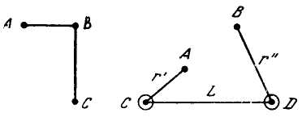
очень четко раскрывающие логическую сторону проблемы.
Если, например, точки системы А, В, С, к которым приложены силы, связаны между собой прямоугольным рычагом, способным вращаться около точки В, то для СВ = 2ВА все возможные перемещения точек С и А есть всегда только дуги круга с центром в точке В, перемещение точки С всегда вдвое больше перемещения точки А и перемещения одной точки всегда перпендикулярны к перемещениям другой.
Если точки А и В соединены нитью длиной в L, которая может скользить через неподвижные кольца С и D, то возможны все те перемещения точек А и В, при которых эти точки могут двигаться по двум шаровым поверхностям, описанными радиусами r' и r" около точек С и D (как центров) или внутри этих шаровых поверхностей, причем
r' + r" + CD = L.
Эти два примера, описанные Махом, нам вскоре пригодятся для дальнейшего анализа тех идеализаций, в ходе которых формировалось понятие механического движения. Пока обратим внимание на одну, логически крайне существенную, сторону дела. В принципе возможных перемещений идея связи оказывается обратной стороной, пространственным, потенциальным воплощением идеи движения.
Логически совершенно необходимо, чтобы понятие движения было впервые научно сформулировано в тождестве с понятием взаимосвязи. Только через понятие связи оказывается возможным дать теорию движения, а не ограничиться отдельным случаем данного, единожды осуществленного движения. Дело в том, что рефлектированное в понятии связи движение раскрывается как возможность, как система возможностей, т.е. становится объектом теоретического познания. Необходимость тождества противоположных определений — сохранения места (покоя) и изменения места (перемещения) — выражает научное понятие механического движения именно потому и именно в той мере, в какой идея покоя представляет собой лишь частный и, так сказать, эмпирически нащупанный вариант идеи взаимосвязи, т. е. потенции движения.
Если взаимосвязь и становление — два противоположных определения движения, то можно утверждать, что сейчас (XX в.) начинает формироваться новая теория движения (т. е. теория потенций движения), заложенная уже не в понятии взаимосвязи, но в понятии становления. Идея кванта действия, идея трансмутации элементарных частиц выражают новую тенденцию. Это уже новый тип потенций, имманентных самому процессу движения, а не состоянию покоя. Можно также предположить, что, поскольку теория типа «взаимосвязь — потенция движения» уже издавна развивается и достигла высокой степени совершенства, постольку теория типа «становление — потенция движения» не разовьется в самостоятельную, отдельную теорию, но, слившись с уже существующим типом теории, даст синтетическую теорию движения.
Итак, если вернуться к основной линии исследования,— идеализация механического движения в образе идеального рычага позволила выделить то состояние («равновесие»), в котором тождество движения и покоя способно было развернуться всеми возможными (для данной системы!) перемещениями. Это означает, что формировалось (пока только формировалось!) понятие, функционирующее одновременно как первый вариант научной механической теории.
Вряд ли стоит специально оговаривать, что понимание идеи рычага как идеи нарушения и восстановления равновесия давало импульс к формированию именно статики, т. е. механики уравновешенных сил, покоящихся точек. (Очень четкое методологическое изложение проблем статики дано Максом Планком в его «Общей механике».)
Собственно, основная задача статики и складывалась на основе рефлексии двух противоположных и вместе с тем (по предмету) тождественных определений движения. Мысль сновала в своеобразном «челноке». Понять движение означает понять его как покой, как связь, понять покой, связь означает понять их как движение, как напряженность, как действие статических сил.
Идея сущности как формы (см. раздел II настоящей части) была сокровенной идеей статики. Статика, возникающая в период античности, это не современная статика, существующая где-то рядом с динамикой как ее частный случай. В период античности статика выступала теоретической основой всей механики, всего понимания процессов механического движения (в динамическом и в кинематическом аспектах). Можно сказать резче. Вся механика, сведенная к статике,— это уже иной (более ранний) период понимания сущности вещей, это уже другая (не классическая) механика, другая форма воспроизведения объективных противоречий движения. Макс Борн в своих замечательных очерках о предыстории теории относительности Эйнштейна пишет:
«Исторически механика берет свое начало из принципа равновесия или статики: построение ее из этого исходного пункта наиболее естественно также и с точки зрения логики...»67
Там же Борн раскрывает особое значение первоначального (характерного для статики, для состояний равновесия) отождествления сил и их действия, аил и движения. Такое тождество пронизывало и понятие веса, и понятие упругой силы — этих двух основных понятий статики.
«Если... состояние равновесия нарушается в результате уменьшения или устранения одной из сил, возникает движение.
Поднятый вес падает, когда рука, поддерживающая его, освобождает его, т. е. когда исчезает противодействующая сила. Стрела летит вперед, когда стрелок отпускает тетиву натянутого лука... Сила стремится создать движение. Это — исходный момент динамики: отсюда начинаются все попытки открыть законы такого рода процессов»68.
К сожалению, ситуация вполне ясная для физиков и механиков (античная статика — это секрет всей античной механики, динамики в том числе) всерьез озадачивает иных историков науки. Не интересуясь формированием и развитием понятий, обращая внимание исключительно на смену эмпирических фактов, они невольно переносят на прошлое, на античную науку, современное представление о соотношении динамики и статики. Пытаясь освободить историю науки от логических умствований, некоторые историки освобождают себя от подлинного историзма.
С особой наглядностью эти исторические «сдвиги» выступали в известном утверждении Розенбергера: «Механика древних распадется на две совершенно отдельные (!) ветви: на статику, трактуемую чисто математически, и на динамику, трактуемую чисто философски»69.
Розенбергер так и не заметил, что, во-первых, чисто философская (точнее, чисто логическая — Аристотеля или Эпикура) трактовка динамики (точнее, проблемы движения вообще) легла в основу коренных идей античной статики. Он не заметил, во-вторых, что сам смысл, точнее, замысел античной статики состоял в объяснении динамики, в создании теории движения.
Вслед за Розенбергером идут и некоторые современные историки механики. Нe обнаруживая в античности связей динамики и статики, как их понимает современная наука, эти историки приходят к выводу о полном отсутствии таких связей вообще. Идея этих рассуждений проста: в элементарном периоде в основном развивалось учение о равновесии тел. Учение о движении тел оставалось в зачаточном состоянии. Между обоими этими разделами механики существовала непреодолимая разобщенность, это были две самостоятельные ветви естествознания.
Но ведь в том-то и состоял секрет античной механики, что учение о равновесии тел было основой учения о движении.
Оставляя пока в стороне механику Архимеда (об этом речь еще впереди), продумаем теперь до конца логику Псевдо-Аристотеля, логику «постановки проблем» и «размышления над апориями механического движения» (вспомним оценку «Механических проблем», данную Махом). Тем самым мы дойдем до конца первого витка той спирали мышления, в которой осуществлялся в период античности генезис научного понятия механического движения.
2. Формирование идеи механического движения.
Генезис понятия как тождества противоположных определений
Цитируя известный афоризм «Механических проблем» Псевдо-Аристотеля, мы сознательно воспроизвели лишь одну небольшую его часть: «Почти все... происходящее при механических движениях... возводится к рычагу».
Процитируем этот отрывок полнее.
«Удивление вызывают из происходящих сообразно природе те явления, причина которых остается неизвестной. Таковы случаи, когда меньшее одолевает большее и обладающее малой силой приводит в движение большие тяжести, и вообще почти все те проблемы, которые мы называем механическими... К затруднениям подобного рода относятся и вопросы о рычаге, ибо кажется несообразным, что большая тяжесть приводится в движение меньшей силой, и это при еще большей тяжести... Начало причины этого заключено в круге и недаром, ибо вполне оправдано, если что-либо удивительное происходит от чего-то еще более удивительного. Но наиболее удивительно совместное возникновение противоположностей, а круг слагается из таковых. Ведь он сразу же возник из движущегося и покоящегося, чьи природы противоположны друг другу».
«Нет ничего несообразного в том, что круг есть начало всех этих удивительных вещей. А происходящее в весах возводится к кругу, происходящее в рычаге к весам, тогда как почти все остальное, происходящее при механических движениях, возводится к рычагу... Многое удивительное происходит с движениями кругов оттого, что на одной и той же линии, проведенной из центра, ни одна точка не движется с равной скоростью, как и другая, но всегда более далекая от неподвижного конца движется быстрее, что станет ясным в последующих проблемах»70.
Следовательно, полный виток античной идеализации механического движения включает (согласно «Механическим проблемам») следующие узлы: многообразие механических движений → рычаг → весы → круг.
Если учесть, что понимание весов носит промежуточный, переходный характер — от идеального рычага к идее круга, — то можно сказать, что понятие механического движения определялось в «Механических проблемах» как своеобразное единство мысленного, идеализованного предмета познания71 — рычага и идеи этого предмета — круга (в других вариантах — диска, шара). Причем эта идеализация носила всеобщий — для античности — характер. Идея Псевдо-Аристотеля выражает общее (для Герона и Архимеда, Евдокса и Арихта, Ктесибия и Витрувия) понимание движения. Правда, это понимание воплощено в «Механических проблемах» с особой афористичностью, продиктованной стремлением именно понять (но еще не рассчитать) сущность движения.
Итак, можно представить следующую схему понимания (понятия) механического движения:
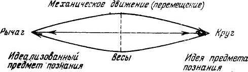
Каково же реальное логическое содержание этой схемы?
Чтобы ответить на этот вопрос, вернемся к образу идеализованного рычага, который выступил перед нами как мысленный предмет познания. Мы подчеркнули уже, какие потенции научной теории движения таились в этом образе, особенно если учитывать сведение самого рычага к образу весов — к идее нарушенного и восстановленного равновесия. Однако, несмотря на все возможности, заложенные в этом образе, идеализованная форма рычага еще не являлась действительным понятием, еще не была зерном научной теории. Пока это было еще только теоретическое представление, только одно из определений научного понятия.
В этом представлении, в этой идеальной модели движения не хватало мысли, идеи. Невесомый рычаг соотносился с действительными, эмпирическими рычагами, выступал их идеальной формой, но эта идеальная форма не могла еще стать основой теории рычага, не была способна количественно и качественно объяснить все возможные случаи перемещения. Все эти случаи сводились к «случаю» идеального рычага, но еще не могли быть (и это крайне существенно) выведены из этой формы — с полной необходимостью и по определенному функциональному закону возрастания скоростей и дальностей перемещения. Рычаг (идеализованный рычаг) сам нуждался в объяснении, должен был выступить не только идеальным отражением предметного многообразия, но и воплощением, воспроизведением определенной идеи. Только в этом случае (понятие как воплощение идеи, как материализация деятельности) общее представление уже перестает быть представлением, а становится одним из необходимых определений научного понятия.
Выше было раскрыто общее, абстрактное, содержание той идеи, которая позволяла обнаружить в образе рычага (точнее, весов) определенную меру движения. Такой идеей был принцип возможных перемещений (зависимость перемещений от структуры связей).
Однако, во-первых, в таком абстрактном виде принцип возможных перемещений еще не мог быть явно сформулирован в период античности. Он выступал как потенция. Для его явного, открытого воплощения (Бернулли, 1717) понадобились обобщения и идеализации всего многообразия механических связей (а не только статических взаимодействий, не только тяжелой и упругой сил).
В явном виде принцип Бернулли мог быть сформулирован тогда, когда все теоремы механики, которые были известны для тяжелых сил, оказалось возможным перенести на силы произвольные72, когда третий закон Ньютона, закон равенства действия и противодействия, был положен на долгие годы в основу теории механических связей. До «Математических начал естественной философии» (1686) идея «связь — движение» не могла стать математически явной, могла носить лишь грубо качественный характер.
Во-вторых, в период античности сам принцип возможных перемещений мог быть уловлен и выражен только как определенная форма. Это отвечало той модели понимания сущности вещей, о которой мы уже достаточно подробно говорили во II разделе II части.
Эта форма должна была служить как бы графической записью тех количественных градаций движения, которые потенциально таятся в связях рычага. Она должна была служить формой (пока еще не формулой) закона механического движения на том уровне понимания, который был характерен для античных ученых. Такой формой, качественно и количественно объясняющей все многообразие механических движений, заложенных в принципе рычага, и была форма круга, диска, шара.
Такой вывод отнюдь не является неожиданным. Что касается качественной картины, то круговое движение плечей рычага (любого рычага, любого рода) воспринималось вполне наглядно и определенно.
В «Механических проблемах» Псевдо-Аристотеля автор прямо формулирует, что находящиеся в равновесии грузы обратно пропорциональны дугам, описанным конечными точками плеч при движении последних. Даже крайне придирчивый Мах не может не признать, что это есть первое выражение принципа возможных перемещений73.
В случае прямоугольного рычага возможными перемещениями оказываются дуги круга с центром в точке опоры (В), В случае связей (точек А и В) через неподвижные кольца (С и D) возможными перемещениями оказываются перемещения точек А и В по двум шаровым поверхностям, описанным радиусами r' и r". Распределение возможных перемещений тел, связанных законом рычага, всегда (как и в приведенных примерах) дает форму круга или шара.
Еще более существенна количественная сторона дела. Геометрия круга позволяет распределить возможные скорости перемещения грузов в определенной, количественно строгой зависимости от длины плеч рычага. Вспомним снова идею Псевдо-Аристотеля о связи образов рычага и круга. Приведем изложение этой идеи у В. П. Зубова: «Чем дальше точка круга отстоит от его центра, тем быстрее она движется при вращении, тем более длинный путь она проходит за то же время. Точно так же, чем дальше отстоит конец рычага от оси вращения, тем быстрее он движется. Поскольку, далее, скорость движения обратно пропорциональна тяжести тела, постольку отсюда выводится (в «Механических проблемах») закон рычага: для равновесия необходимо, чтобы к точке, движущейся с большей скоростью, был приложен меньший груз. Автор «Механических проблем» заключает: «Под действием одной и той же силы точка, отстоящая дальше от центра, перемещается быстрее и большая линия описывает большую дугу». Той же зависимостью должен быть объяснен процесс взвешивания (хотя бы на безмене). Под действием одной и той же тяжести концу коромысла необходимо двигаться тем быстрее, чем дальше отстоят он от веревки (от точки подвеса), а оттого в больших весах гораздо значительней становится величина тяжести, производимой тем же грузом»74.
Сейчас нет возможности дальше углубляться в эти соображения. Важно было лишь подчеркнуть, каким образом идея (форма) круга оказалась формой закона возможных перемещений, совершаемых посредством рычага.
Вернемся теперь к схеме понятия механического движения.
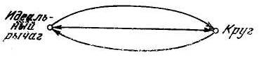
Тождество идеального рычага (мысленный предмет познания) и кинематически осмысленной формы круга (идея предмета познания), тождество механики и геометрии дает живое, способное к развитию, объясняющее бесчисленное множество частных случаев понятие движения (перемещения).
Впрочем, утверждение о подвижности, действенности этого понятия, об его способности к логической конкретизации пока еще звучит декларативно. Пока еще намечено только «статическое» тождество модели рычага и идеи круга, поскольку не вскрыты пути взаимоперехода, взаимоперелива, этих двух определений научного понятия движения. Между тем именно в этом взаимопереходе и переливе оба полюса постоянно обогащаются, понятие обнаруживает свою нетождественность с самим собой, оказывается развивающимся, «неуравновешенным», т. е. понятием в собственном смысле слова.
Строго говоря, для удобства изложения мы несколько упростили, огрубили реальный процесс формирования понятия движения. Могло создаться впечатление, что сначала сформировался мысленный предмет познания, а затем, в заключение, оформилась геометрическая идея движения (круг). В действительности дело обстояло иначе.
Само формирование модели идеализованного рычага проходило под воздействием складывающейся идеи круга. Многообразие рычагов и перемещений, форм и функций сосредотачивалось в образе рычага не в порядке обобщения и отвлечения, но в порядке идеализации всех этих движений. Стержнем этой идеализации и была идея круга, постепенно проясняющаяся геометрия движения (зависимость скорости от длины плеча, от расстояния до центра круга, до точки опоры). В реальном движении рычага вырисовывалась та идеальная фигура, которая «вычерчивалась» в воздухе его плечами, тот «круг кругов», который был одновременно: и формой движения и его объяснением. Множество различных рычагов необходимо тут было не для обобщения, а для наведения на мысль, для того чтобы после многих «намеков» разглядеть идеальную сущность, форму, заключенную в каждом отдельном случае. Идеализованный образ рычага оказывался мысленной реализацией идеи круга, и вместе с тем этот образ служил основой, источником формирования идеи круга как идеи движения. Этот взаимопереход мысленного предмета познания и идеи предмета познания не остановился в момент становления понятия, он и дальше определял всю жизнь и развитие понятия движения, его реальное живое тождество.
Однако, чтобы представить эту реальную жизнь понятия более содержательно и конкретно (логически конкретно), необходимо, чтобы читатель учитывал два момента, остановиться на которых подробнее не представляется возможным.
Первый момент. Наивным было бы думать, что идея круга как идеальной формы перемещения вырастала только из формы рычага, только вместе с этой механической «формой форм». Логика, наблюдения и без всякого рычага постоянно укладывала, «упаковывала» любые предметы в идеальную, наиболее компактную форму шара. Горизонт, окруживший землю, круговые движения светил, постоянный практический опыт, интуитивно складывающийся в какое-то подобие изопериметрической теоремы, — эти соотношения и пропорции оформлялись в такую картину мира, в которой проблема идеальной формы сама собой перерастала в проблему геометрии шара.
Но все же это был только некий космологический и психологический фон, благоприятствующий той основной логике понимания вещей, которая определена нами выше. Эта логика понимания воспроизводила логику предметной деятельности, была мыслительной проекцией материального трудового процесса.
Второй момент. Необходимо хотя бы вкратце набросать ту категориальную структуру, которая характерна для развертывания понятия движения на этом первом этапе развития механики75. Такой набросок необходим, поскольку на его основе становится ясным, что понятие, воспроизводящее движение,— это процесс, движение понятий, их превращение, подчиненное определенному закону, определенной категориальной связи.
Такой набросок возможен потому, что его черты можно разглядеть уже в той характеристике идеализованного предмета познания (рычаг) и идеи, раскрывающей этот предмет как систему возможных перемещений (круг), которая была дана на предыдущих страницах.
Вот основные узлы такого наброска.
1. В античном варианте механики понятие движения содержит следующую схему теории движения.
Первый цикл понимания движения может быть представлен в форме В → D (взаимосвязь → движение).
Исходным моментом, объясняющим фактором в этом цикле выступает статическая взаимосвязь сил, форма рычага. Именно эта форма потенциально таит в себе любое движение, любой вариант реального перемещения. В аристотелевской системе это означает, что космическое расположение тел, их место определяет характер их потенциального движения.
Второй цикл понимания движения исходит уже из самого процесса движения, из самой деятельности рычага.
Рычаг как бы чертит в воздухе (в пространстве воображения) «круг кругов», дает в совокупности своих движений застывшую взаимосвязь, структуру концентрических окружностей.
Движение рычага застывает в «чертеже» осуществляемых им перемещений. В этом (мысленном) результате движение уже есть, существует, оно не осуществляется, не потенциально, но осуществлено, снято.
Этот цикл понимания движения может быть представлен в форме D → В’ (движение → взаимосвязь «высшего» порядка, взаимосвязь концентрических окружностей на воображаемом чертеже, «прочерченном» всеми возможными движениями рычага).
Но в этом застывающем чертеже («круг кругов») по сути дела вновь реализуется движение, но уже как определенная математическая последовательность.
Тут выступает как бы третий цикл понимания движения.
Взаимосвязь концентрических окружностей расшифровывается как «движение движения», как закономерность изменения скорости движения (в зависимости от соотношения грузов и плечей рычага).
В целом, логический «челнок» дает следующую форму, результирующую все моменты понимания движения.
B → D → B’ → D’
Конечно, набросок этот неизбежно схематичен, как схематично, впрочем, по самой своей сути понимание сущности движения на этом этапе развития научной мысли.
Но все же и в таком схематизированном виде этот пунктир позволяет уловить важнейшую тенденцию дальнейшего развития и превращения теории движения.
2. Для научной модели движения на данной ступени развития науки, т. е. в период античности, характерно не-расчлененное качественно-количественное тождество. Количественные определения еще не отделились от качественных, еще не способны к самостоятельному существованию. Однако и качественные определения выступают в неразрывном единстве с количественными, в форме количественных определений.
Тут опять-таки все дело именно в форме, в понятии формы. Идеальная форма вещей, т. е. их сущность в античном понимании, определяет непосредственное тождество качественно-количественных определений; определяет количество, наглядно, качественно представляемое.
Возьмем для иллюстрации пифагорейскую арифметику в интересной логической интерпретации Э. Кольмана.
«Пифагорейцы изображали числа в виде точек, группируемых в геометрические фигуры. Так возникло понятие «фигурных чисел», в котором нашла свое отражение тесная связь, существующая между понятиями числа и пространственной протяженностью. Например, «квадратные числа» 1, 4, 9 изображались так:
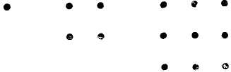
Треугольные числа 1, 3, 6 представлялись в таком виде:
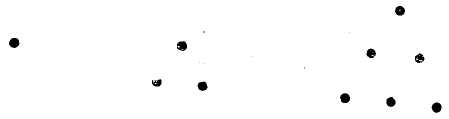
....точка, изображающая единицу, была далее неделима — она была математическим атомом.
Сама точка определялась как единица, обладающая положением...
...Среди чисел-сумм пифагорейцы выделяли «многоугольные числа». Наиболее простыми из них были «треугольники» (1 + 2 + 3 = 6, 1 + 2 + 3 + 4 = 10...). Из «треугольных чисел» пифагорейцы получали и все квадратные числа, способом, который указан на чертеже
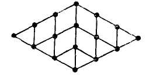
Таким же способом получались «пятиугольные числа» и т. д.»76.
Ссылка на идеи пифагорейцев очень полезна.
Теперь читатель наглядно может представить то внутреннее логическое сродство геометрических и арифметических представлений, которое было характерно для мышления древних греков. Это единство не имело чисто количественного, математического характера (как можно было бы предположить, исходя из современных представлений о предмете математики). В древности это единство опиралось на понятие формы, идеальной формы, лежащей в основе качества вещей, и непосредственно совпадало с категорией меры.
В этом рациональная основа пифагорейской «мистики», столь часто искажаемая современными исследователями.
Поэтому нельзя полностью согласиться с Э. Кольманом, который утверждает, что для пифагорейцев был характерен приоритет арифметики над геометрией. Впрочем, такая аберрация вполне объяснима. Стоит не заметить особого значения формы в гносеологии греков, и все действительные логические отношения легко приобретают превращенный характер.
И, наоборот, стоит внимательно разобраться в гносеологическом значении идеи формы для древних греков, и сразу же открывается путь в тайны логического «механизма» механики Архимеда. А проникнуть в эти тайны крайне необходимо. Ведь именно эта ветвь античной механики и была действительной положительной наукой, именно в ее контексте понятие механического движения стало работающим, действующим и развивающимся научным понятием.
3. Как понятие движения «работает» в механике Архимеда
Читатель. Неужели Вы всерьез полагаете, что в сознании античных ученых существовало то понятие механического движения («идеальный рычаг — форма круга»), о котором шло все время предыдущее рассуждение? В самом деле, насколько известно, нет ни одного механика или математика античности, формулирующего такое странное, «гибридное», понятие.
Любой ученый и вообще любой гражданин древнегреческого полиса или эллинистического государства на вопрос, что такое движение, или на вопрос, как он определяет движение, ответил бы, не мудрствуя лукаво, примерно так же, как ответили бы и мы — люди XX в.: «Это — изменение телом своего места, или величины, или качества. Непрерывное изменение каких-то состояний и есть движение». Вот и все. Получается, что и у нас, и у древних греков понятие о движении остается одним и тем же, неизменным, неподвижным.
Но даже если оставить в стороне «любого гражданина» и рассмотреть только научные труды, мы не увидим ничего похожего на то странное образование, которое Вы выдаете здесь за действительное и действующее «научное понятие» движения. Ничего себе — «всеобщее» понятие, которое никто не использует и никто не осознает! Остается предположить, что оно существует в сознании людей как кантовская «вещь в себе».
Правда, Вы приводили кое-какие примеры и рассуждения древних, но может показаться, что все эти примеры не больше, чем просто примеры: они иллюстрируют, но не доказывают. Рассуждения о рычаге и круге есть рассуждения о рычаге и круге, о тех или других машинах, о тех пли других (объяснимых по схеме рычага) механических орудиях, но отнюдь не о понятии механического движения, не о понимании того, что есть движение.
Автор. Все Ваши возражения объясняются очень просто. В данном случае Вы по-прежнему путаете понятие с формальной дефиницией. Конечно, нелепо было бы полагать, что на вопрос: «Что такое движение?» — в античных трудах будет прямой ответ: «Движение — это тождество...» и т. д. Прежде всего такой ответ был бы бессмысленным по существу. Понятие движения — это ответ не на вопрос об определении факта движения, а на вопрос о сущности движения, т. е. на вопрос, как и почему движение (это самое эмпирически наблюдаемое движение) возможно и в чем состоит действительная всеобщность любых его форм.
Ясно, что все рассуждения о движении как непрерывном изменении чего-либо (например, места) совершенно не отвечают на вопрос о сущности, а подмена термина «движение» термином «изменение» только смещает проблему в новую плоскость, но не разрешает ее.
Это во-первых. Во-вторых, понятие движения и нельзя надеяться (особенно для античного периода) встретить в виде откровенной формулировки, в виде одиночного суждения. Работающее понятие всегда выступает в форме теории. Только внимательно рассмотрев теорию в ее внутренней логике, в ее системности, мы обнаруживаем понятие, дающее подлинное единство этой теории и ту идеальную модель познаваемого предмета, «сведение» к которой всех частных «случаев» (точнее, выведение из которой всех частных «случаев») и составляет секрет любой теории, любого способа понимания.
В «Механических проблемах» Псевдо-Аристотеля, где это понятие только формировалось, но еще не работало, оно могло выступать обнаженно и афористично. В подлинно научных трудах по механике или геометрии понятие движения выступает как способ понимания, как теория, как процесс и может быть уловлено и «засечено» только в процессе своей работы.
Вот почему мы и рассмотрим сейчас «работу» научного понятия движения в механике Архимеда. Это и будет действительным ответом на сомнения оппонента.
Характернейшей чертой механики Архимеда является как раз постоянная рефлексия механических проблем в проблемах геометрических и обратно — проблем геометрических в механических. Механика используется как способ решения геометрических задач, геометрия — как способ решения задач механических. В трудах Архимеда осуществляется постоянное обращение понятия. То рычаг, то круг исполняют функцию предмета познания (идеализованного предмета), то круг, то рычаг выступают вместе с тем в роли идеи этого предмета, в качестве способа объяснения, в качестве метода. Именно в таком постоянном обращении понятие механического движения и существует реально. Именно в этом обращении осуществляется действительное тождество двух определений движения, понятие выступает как научное понятие, способное развернуться в теорию.
Создатели двух величайших систем механики — Архимед и Ньютон — вполне понимали значение этого обращения понятий, этой постоянной рефлексии между геометрической и механической проекциями понятия механического движения. Ни Архимед, ни Ньютон никогда не ограничивались пониманием механики как части геометрии, они одновременно понимали геометрию как часть, сторону, проекцию механики.
Архимед в письме к Эратосфену предупреждал, что он исследовал математические задачи средствами механики.
Ньютон в предисловии к первому изданию «Начал» писал:
«Ведь и само вычерчивание прямых линий и кругов, на котором основана геометрия, относится к механике... Вычерчивание прямых линий и кругов, правда, тоже задача, но не геометрическая. Решение таких задач требуется от механики, в геометрии же научаются пользоваться результатами этих решений... Итак, геометрия опирается на механическую практику и есть не что иное, как та часть всеобщей механики, которая точно излагает и доказывает искусство измерения»77.
Раскроем теперь реальное содержание сформулированных выше тезисов.
В «триаде» «Механических проблем» «рычаг — весы — круг» весы не случайно занимают центральное, промежуточное место. Теория весов, теория равновесия играет роль перелива, перехода от понятия рычага к понятию круга, от понятия круга к понятию рычага, от механики к геометрии и обратно. В теории весов идеи рычага и круга выступают в непосредственном тождество, но не в абстрактном, спокойном тождестве, а в подвижном, развивающемся. Понятие весов, замещая понятие рычага (ср. хотя бы анализ безмена в «Механике» Галилея), явно вводит количественные соотношения, соотношения взвешивания, а не передвижения, измерения, а не технологических эффектов. Тем самым проблема «статика-динамика» выступает как проблема «статика-геометрия», как соотношение «форма — число», как качественно-количественное отношение. Решающее логическое значение приобретает категория меры, этот основной принцип построения античных, относительно замкнутых научных систем.
Вот почему исходным моментом механических и чисто геометрических построений Архимеда оказывается понятие центра тяжести. Вообще-то говоря, если рассуждать эмпирически, этот факт едва ли нуждается в развитии и обосновании.
В центре внимания Архимеда стояли статические задачи: «Расчет равновесия тяжелых подпертых тел — балок, стропил, колонн, плит, расчет равновесия подвешенных тяжелых тел (мостов, весов), расчет равновесия плавающих тел — судов...»78. Именно эти проблемы исследуются, по Герону, в не дошедших до нас трудах Архимеда «Книга опор» и «О весах». Вполне понятно, что все эти исследования естественно и неизбежно приводили к анализу понятия центра тяжести и на этой основе — к анализу условий нарушения и восстановления равновесия. В книге «О весах» Архимед находит общий критерий равновесия подвешенного тяжелого тела. Центр тяжести такого тела должен быть расположен на отвесной линии, проходящей через точку подвеса.
Само определение (понимание) центра тяжести, характерное для Архимеда, пожалуй, лучше всего проясняет Галилей в своей механике. Основатель механики нового времени глубоко и как-то интимно, изнутри понимал логику рассуждений Архимеда. По признанию самого Галилея, его учение о движении, построенное на положениях геометрии, восходит к Архимеду. Сальвиати говорит: «Я преодолел в конце концов затруднения (с истолкованием определений Эвклида) лишь благодаря тому, что, изучая чудесные «Спирали» Архимеда, нашел в прекрасном введении к этому трактату доказательство, подобное предложенному нашим автором»79, или в другом месте: «Сочинения самого Архимеда я читал и изучал с бесконечным удивлением»80. Логические линии обеих механических систем — Архимеда и Галилея — выходили из одной точки (проблемы), хотя затем расходились в противоположных направлениях.
В «Механике» Галилей пишет: «За центр тяжести в каждом теле принимается такая точка, вокруг которой расположены части с одинаковыми моментами так, что если представим себе, что тяжелое тело подвешено и удерживается за эту точку, то части справа будут уравновешиваться частями слева, части спереди — частями сзади, части снизу — частями сверху и тяжелое тело, будучи поддерживаемо таким образом, никуда не отклоняется, а помещенное в какое угодно положение будет в нем оставаться, если только подвешено за центр...»81
В этом определении только указание на равенство моментов было неявным для Архимеда. Все остальные логические ходы («если представим себе, что тяжелое тело подвешено...») полностью отвечали логике Архимеда.
Правда, дальнейшее галилеевское развитие этих идей путем анализа соотношения центра тяжести тела и центра «всех тяжелых вещей» (центра Земли), путем анализа законов падения выходило за пределы логики Архимеда. Это развитие вообще выходило за пределы античной логики движения. Но само по себе рассуждение об уравновешивании всех сил и тяжестей вокруг постоянного центра («части справа уравновешиваются частями слева, части снизу — частями сверху», само это рассуждение своим наглядным и качественным характером вполне отвечало основным идеям Архимеда.
Устанавливая центр тяжести тела, мы как бы мысленно приравниваем любое тело к шару или диску, «перераспределяем» (опять мысленно) все его «части» и на этой основе получаем возможность количественно (геометрия круга, учет «моментов») подойти к решению всех статических проблем. В неявном виде идея «момента» была характерна для Архимеда, который всегда исходил из того, что способность силы повернуть (в весах) тело вокруг фиксированной оси измеряется произведением этой силы на расстояние от опоры до точки подвеса.
Идея центра тяжести, сводившая воедино модели рычага, весов и форму круга, приобретала громадное методологическое значение и позволяла решить все апории движения с той степенью понимания, которая была возможна в эпоху античности. Тут была и задача начала движения, и задача конца движения, и задача скорости движения, его времени, и задача реального отождествления силовых и геометрических характеристик (принцип рычага), и, наконец, чисто геометрические задачи, решаемые (принципиально) механическим способом.
Особое методологическое значение имеют два типа архимедовых задач: задачи механические, решаемые геометрическим способом, и задачи геометрические, решаемые на основе принципов механики (идей «взвешивания»). Каждый раз основой решения тех и других задач оказывалась идея центра тяжести. Именно эта идея позволяла осуществлять обратную связь механики и геометрии.
В дошедшем до нас трактате «О равновесии плоских тел» Архимед дает общую теорию статики (точнее, механики в целом) на основе «скрещения» двух, казалось бы, частных проблем. Решение задач на нахождение центра тяжести треугольника, параллелограмма, трапеции, многоугольника, плоских фигур, ограниченных кривыми линиями, соединяется в этом труде с выводом закона рычага. Сам тип этой теории совсем не похож на тип и стиль современных теорий. Теоретический, замкнутый характер построениям Архимеда придает не логическая «непрерывность», не формальная всеобщность, но именно «сопряжение» двух образцов частных задач. Сопряжение это осуществляется в одной логической точке, в понятии «центра тяжести»,
Единство теории прямо выступает как единство метода.
Единый метод решения задач на построение (фигур и механизмов) это и есть теория античной механики, теория, в которой «теоретическая» и «практическая» идеи выступают в органическом тождестве.
(Только в этом пункте наших размышлений оказалось возможным ощутимо показать действительный характер этого тождества, о котором в предыдущем изложении приходилось говорить — и не раз — в самых общих чертах.)
Обоснование Архимедом закона рычага исследовано в науке с самых различных сторон. Обратим сейчас внимание лишь на следующие моменты.
В допущениях (постулатах), на которых строится основной вывод, по сути дела обосновывается возможность применить к исследованию закона рычага принципы нахождения центра тяжести, т. е. возможность дать геометрическое толкование механическим проблемам. Так, в допущении первом говорится, что «равные грузы, действуя на равных расстояниях от точки опоры невесомого стержня, уравновешиваются». В допущении третьем допускается, что «при равных грузах, расположенных па неравных расстояниях от точки опоры, перевешивает отдаленный». В допущении четвертом (пожалуй, наиболее существенном) указывается, что «действие одного груза может быть заменено действием нескольких равномерно распределенных так, что центр тяжести занимает неизменное положение. Обратно, несколько равномерно распределенных грузов можно заменить одним, подвешенным в их центре тяжести и имеющим вес, равный сумме этих грузов».
Такой подход к изучению рычага оказывается строго научным именно в той мере, в какой он позволяет геометрически представить статические моменты, отождествить образ равновесия с образом равенства расстояний (радиусов) до центра круга. Иными словами, постулаты Архимеда как раз и раскрывают необходимость постоянной рефлексии задач механических и задач геометрических. Расчет центра тяжести различных фигур позволяет (если исходить из постулатов) нащупать способы количественного определения условий равновесия для самых различных сочетаний длины плеч и величины грузов рычага.
Если учесть эту особенность допущений Архимеда, то вывод закона рычага оказывается кристально ясным (теоремы 6-я и 7-я).
Закон рычага гласит, что «соизмеримые (и несоизмеримые) грузы уравновешиваются на расстояниях, обратно пропорциональных их весам».
Вывод этого закона как раз и осуществляется за счет «рассеяния» неравных грузов на более легкие, равные части с соответствующим удлинением короткого плеча.
Получается, что любой неравномерный, уравновешенный безмен тождественен однородному стержню, подпертому (или подвешенному) в середине (в центре тяжести), при равномерном «рассеянии» общей нагрузки.
К рычагу, плечи которого относятся как 1:2, подвешиваются грузы в отношении 2:1. Груз 2 замещается двумя грузами 1, которые оба подвешены на расстоянии 1 от точки привеса. Снова осуществляется полная симметрия около точки (подвеса), а следовательно, равновесие
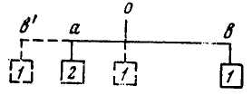
Характерно, что Мах, излагая вывод Архимедом закона рычага, крайне недоволен недостаточностью аргументации. Ему представляется, что допущения Архимеда основаны на чисто интуитивных, ненаучных представлениях, а поэтому и весь вывод повисает в воздухе.
Требуется, по мнению Маха, еще доказать, что грузы на равных плечах должны уравновешиваться, что на рычаг не влияют другие внешние факторы и т. д.
Мах не замечает, что постулаты Архимеда, отсылающие читателя к идее центра тяжести, т. е. в конечном счете к геометрии круга и шара, уже несут в себе строго количественный подход к проблеме рычага, содержат не интуитивные предположения, но работающий аппарат измерения. Намертво привязанный к одному (классическому) типу научных теорий, Мах не может подметить всего своеобразия метода Архимеда. Набор задач на нахождение центра тяжести представляется ему странным, посторонним привеском к теории рычага, и он готов во имя экономии мышления отбросить эту «вычислительную роскошь». Но это означает, что Мах готов выбросить из теории рычага саму логическую суть, все средоточие этой теории.
Интересно, что Мах так и не нашел ни одного возражения, когда итальянский исследователь Г. Ваилоти подметил порочность этой странной «экономии». Ваилоти показал, что Архимед вполне сознательно вывел принцип рычага, основываясь на общих данных опыта относительно центра тяжести.
В ответ Мах заметил лишь, что хотя Ваилоти прав, но «для меня (Маха.— В. Б.) маловажно, прав ли я в каждом своем слове»82 (!?).
Вряд ли можно сомневаться, что речь тут шла не о слове, но о самой сути дела.
Нетривиальность метода Архимеда в том-то и состоит (это понял Галилей), что идея центра тяжести позволила механические задачи решить методом геометрии. Иными словами, оказалось возможным выражать определения движения в понятиях состояния (статика) и, далее, в понятиях геометрических, открывающих путь к точному измерению. Вместе с идеей центра тяжести в понимание движения была введена категория возможности. Понятие движения могло теперь развиться в теорию движения.
Еще более явно метод (=теория) Архимеда выступал в обратных задачах — при использовании механических понятий для решения геометрических проблем. Речь идет прежде всего о письме Архимеда Эратосфену (так называемый «Метод»).
Сам Архимед пишет: «Многое, что я выяснил раньше при помощи механики, я потом доказал посредством геометрии, ибо мои рассуждения, основанные на этом методе, не были еще доказательствами; легче, конечно, найти доказательство, когда мы посредством этого метода составим себе представление об исследуемом вопросе, чем сделать это без такого предварительного представления»83.
Суть дела заключается в том, что Архимед нашел формулу площади параболического сегмента, объем шара, объем и площадь многих других тел с помощью мысленного уравновешивания фигур известного и неизвестного объемов на плечах идеального рычага. Самое главное, что на основе этого механического метода был найден своеобразный вариант интегрального исчисления.
Интереснее и глубже всего метод Архимеда анализирует Пойа в своей замечательной книге «Математика и правдоподобные рассуждения». Пойа утверждает, что в этом случае «одно из величайших математических открытий всех времен (речь идет об интегральном исчислении.— В. Б.) имело своим источником физическую интуицию»84.
С этим утверждением можно целиком согласиться, с одним только, может быть, решающим уточнением. Под «физической интуицией» Пойа разумеется нечто неопределенное, основанное на догадке, аналогии, связанное с перепрыгиванием через необходимые логические звенья. В действительности письмо Архимеда дает редкую возможность проникнуть в собственно логическое движение — в «интимный» процесс мысленного преобразования идеализованных предметов. В ходе такого преобразования идеализованные предметы обнаруживают те свои качества и свойства (=приобретают их), которые до этой трансформации они не имели.
Именно так совершается акт любого научного открытия, но осознание этого метода (отнюдь не частного по своей природе, но всеобщего метода логического движения) до сих пор остается еще проблемой, нерешенной задачей. Сам Архимед, рассказав о применении этого метода, осторожно предупреждает об его «недостаточной доказательности», «предварительном характере» и т. д. Опасный рефлекс отождествления логики с формальной логикой уже начинал действовать, но, к счастью, не был еще окончательно закреплен.
Анализ Пойа, при всей недоговоренности его формулировок, является блестящим примером проникновения в эту действительную, предметную жизнь научного понятия.
Архимед исходил, как показывает Пойа, — из достижений Демокрита, нашедшего объем конуса (⅓ объема цилиндра с той же высотой и основанием) и Эвдокса, доказавшего это утверждение Демокрита методом «исчерпания», исследуя изменение поперечного сечения конуса. Архимед совмещает сначала плоские фигуры — поперечные сечения шара, конуса и цилиндра. Далее он начинает «взвешивать» (мысленно или на чертеже») эти плоские срезы. Диск, составляющий поперечное сечение цилиндра, он оставляет на месте, в первоначальном положении. Диски, образованные поперечным сечением шара и конуса, он перемещает по оси X в точку Н, подвешивая их в этой точке вертикально, с помощью нити нулевого веса.
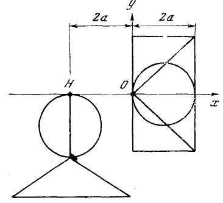
Ось X Архимед рассматривает как рычаг, жесткий брус нулевого веса, а начало О — как его точку опоры, или точку подвеса. Момент двух дисков в левой стороне равен моменту одного диска в правой, следовательно, рычаг (на основе закона Архимеда) находится в равновесии.
С постепенным движением нашего «среза» по оси X мы получаем все поперечные сечения цилиндра. Эти поперечные сечения заполняют цилиндр. Каждому из них соответствуют два поперечных сечения тел, подвешенных в точке Н. Как и их поперечные сечения, шар и конус, подвешенные в точке Н, находятся в равновесии с цилиндром. Поскольку площадь поперечного сечения шара (окружность) известна — открыта самим Архимедом, — то интегральным суммированием всех «уравновешенных» (с цилиндром) поперечных сечений шара и конуса можно найти объем шара (V).
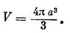
Механика оказалась методом решения геометрических проблем.
Понятие движения, приобретая методологический статут, становится действительно работающим понятием. Причем эта способность понятия к постоянному взаимопревращению и углублению его противоположных определений (мысленного предмета познания и идеи этого предмета) и свидетельствует о завершении генезиса понятия на этой первой, исходной ступени развития механики как науки.
Но живое, действенное тождество противоположных определений понятия как элементарного акта предметной деятельности — только одна сторона дела.
Второй стороной того же тождества является категориальное тождество.
Мы видели выше (раздел II части II), что в механическом движении тождество противоположных категориальных определений выступает (на основе античной логики) как: а) тождество формы и функции и как б) тождество процесса движения с возможностью и одновременно с результатом движения. Если объединить оба эти момента, то окажется, что такое тождество реально означало создание первого геометрического варианта механики.
Геометрическая, пространственная трактовка процессов движения на этом не исчерпывалась. Она стала необходимым (на два тысячелетия) способом определения действительности движения через его возможность, обеспечила проникновение в сущность движения, дала теорию движения.
Однако в античном варианте механики «центр тяжести» этого отождествления лежал именно в центре тяжести, т. е. в статических идеях. Процесс движения угадывался в той системе взаимосвязей, в той форме (рычага), которая должна была объяснить все возможные перемещения предмета.
Законы движения понимались прежде всего как статическая возможность движения. Второй полюс этого тождества — снятое движение; результат движения в статике фактически не работал и учитывался лишь натурфилософски — в «иерархии мест» — этом интегральном аристотелевском представлении.
Такая ситуация, несмотря на все свои преимущества (способ определенного, хотя исторически ограниченного «решения» апории Зенона — Аристотеля), таила в себе смертельные угрозы для только что сформулированного понятия (теории) движения.
Во-первых, исходная идеализация была крайне ограниченной, жестко связанной лишь с определенными формами движения, с определенными ситуациями предметной деятельности (рычаг — весы).
Во-вторых, эта идеализация (тело сохраняет состояние покоя, пока другое тело не выведет его из этого состояния, движение «самоисчерпывается», когда тело вновь уравновешивается) требовала чисто эмпирического или чисто телеологического объяснения причин начала движения, будь то насильственное нарушение равновесия или аристотелевский перводвигатель.
В-третьих, неспособность фиксировать и измерять движение в его результате — в траектории «летящей стрелы» — жестко ограничивала механику чисто интегральными образами. Дифференциальное представление движения, когда каждый момент перемещения мог бы быть зафиксирован как момент начала (возможности) и момент конца (результата) определенного процесса,— такое дифференциальное представление было принципиально невозможным.
Иными словами, античный вариант геометризированной механики не мог работать в качестве меры движения.
Тут мы подходим к существенному моменту.
По сути дела, противоречия научной теории (соответственно понятия) всегда функционируют и развиваются как противоречия меры, как противоречия качественно-количественной определенности.
Именно в той мере, в какой теория воспроизводит меру предмета (меру движения), она воспроизводит предмет как нечто особенное, ограниченное, замкнутое, способное к саморазвитию и самовоспроизведению. Иными словами, противоречия предмета постоянно воспроизводятся (в мере) по какому-нибудь особенному, специфическому закону. Причем сама эта мера обнаруживает себя не только как тождество количественной и качественной определенностей, но как мера чего-то «третьего» более глубоко заложенного, единого — как мера движения, мера деятельности. Осуществляется переход к сущности. Так, в первой главе «Капитала» единство меновой и потребительной стоимостей, воплощенное в товаре, раскрывается как мера деятельности, мера (единство) абстрактного и конкретного труда. Меновая стоимость — момент товарного обращения — оказывается лишь проявлением стоимости, которая характеризует товарное производство.
Любая современная научная теория выступает работающей и способной к развитию (в определенных пределах) мерой движения. В третьем разделе будут детально рассмотрены возникающие здесь антиномии. Сейчас укажем только на один момент: антиномический характер развития всех этих теорий предопределен изначальным стремлением трактовать «измерение» движения как измерение пространства.
Поскольку античный вариант механики не мог работать в качестве такой самовоспроизводящейся меры движения, постольку каждый новый (не сводящийся к рычагу) эмпирический случай движения разрывал теорию, компрометировал ее, возвращал исследователя к безмерному. Каждый новый вариант движения расщеплял отождествленные противоположности (покой и движение, потенцию и процесс), распределяя их по разным предметам, по различным предметным ситуациям.
Понятие (теория) не может развиваться вне разветвления, раздвоения, конкретизации изначального противоречия. Понятие (теория) не может развиваться, если при всех этих раздвоениях и разветвлениях понятие не сохраняет первоначального тождества, иными словами, если теория не сохраняет формы понятия.
Развитие механики Архимеда приводило к ее гибели (в качестве всеобщего метода), поскольку это развитие приводило к разрыву первоначального понятийного тождества, к разрыву меры.
Неизбежен был переход к новому типу развития понятия (теории).
Эта новая форма могла быть обретена только как новое содержание — на основе дифференциальных представлений, позволяющих учитывать и измерять движение по-прежнему в геометрической проекции, но уже в каждый данный момент, в каждой точке бесконечной (теоретически бесконечной) траектории.
Это новое понятие могло быть сформулировано только в процессе самой предметной деятельности, общественного производства — на новой, высшей ступени его развития.
Но это уже иной вопрос — вопрос о формировании и развитии классической механики.
* * *
Сформулированные нами соображения являются в той же мере выводами, в какой — предположениями. Они основаны только на анализе первоначального генезиса научного понятия движения (в механике).
Это генезис протекал в «до-теоретической атмосфере». Первое научное понятие и первая мера движения сформировались из безмерного, в процессе первоначального отождествления противоположностей.
Эта мера была еще столь непрочной, столь неспособной к саморазвитию (в качестве всеобщей теории движения), что при первых же потрясениях вновь растворялась в безмерном. Всеобщее теряло форму особенного и сразу же теряло статут работающей теории.
Вместе с тем эти особенности первоначального формирования и развития научных понятий обнажают с особой резкостью и наглядностью некоторые всеобщие закономерности решающих научных переворотов.
Однако для того, чтобы эти закономерности выявить и определить с большей отчетливостью, необходимо осмыслить другие узловые пункты движения научного понятия (и научной теории).
Предлагаемой идеализации предстоит очень важная проверка, так сказать, испытание «на разрыв», на перерыв постепенности.
Если историческое движение науки действительно воспроизводимо — в элементарной, идеализованной форме — как развитие научного понятия, то это означает, что качественные изменения в науке, в частности переход от старой теории к новой, возможно понять как процесс превращения понятия.
1 Сканировано с книги: А. С. Арсеньев, В. С. Библер, Б. М. Кедров. Диалектика — теория познания. Анализ развивающегося понятия. М., 1967 (прим. ред.).
2 Речь идет, конечно, о теоретической механике, причем в ее концептуальном аспекте, или даже точнее — о «физической механике», как иногда ее определяют.
3 В этом разделе почти нет цитат. Имеется в виду любой курс теоретической механики.
4 Это относится к античной механике Аристотеля — Архимеда (см. II и III разделы этой части), к классической механике Галилея, Ньютона (ср. особенно «Диалог...» и «Беседы...» Галилея), к современным дискуссиям вокруг принципа дополнительности.
5 Луи де-Бройль. Революция в физике. М., 1963, стр. 186. См. также Макс Борн. Физика в жизни моего поколения. М, 1963.
6 В контексте данного исследования первый этап содержательной логики (античный) рассмотрен лишь как предыстория классической механики.
7 Цит. по: Л. Пуанкаре. Эволюция современной физики. СПб., 1910. Здесь же дан блестящий обзор тех отождествлений механики со всеобщей наукой о движении, которые были характерны для физиков в начале XX в.
8 Не следует, конечно, путать эти образные выражения с понятием «пространственно- (или времени-) подобности» в теории Эйнштейна.
9 Томас Броди. Образование и область применения научных понятий. Философские вопросы современной физики. М., 1958, стр. 152.
10 Макс Борн. Эйнштейновская теория относительности. М., 1964, стр. 399–400.
11 Дж. Л. Синг. Классическая динамика. М., 1964, стр. 199.
12 Строго говоря, античная наука не относится исторически к периоду воспроизведения противоречий в форме раздвоения единого. Античность — принципиально особый этап проникновения в сущность движения. Но в определенном аспекте науку античности возможно рассматривать как предысторию классической механики.
13 Маркс. Капитал, т. I. M., 1953, стр. 176.
14 Эйнштейн и Инфельд. Эволюция физики. М., 1948, стр. 144.
15 Луи де-Бройль. Революция в физике, стр. 187.
16 В. Гейзенберг. Физика и философия, стр. 61.
17 Там же, стр. 7.
18 Там же, стр. 73.
19 Там же, стр. 75.
20 Луи де-Бройль. Революция в физике.
21 Безусловно, рассмотрение апорий как введения в историю механики — это лишь один из возможных аспектов. В другом контексте, не истории механики, а, к примеру, в контексте цельного воспроизведения картины мира в античной философии апории Зенона должны быть рассмотрены уже в другом качестве — не как элемент механики, а как элемент античной физики, в самом широком (аристотелевском) смысле этого слова.
22 Гегель. Сочинения, т. I, стр. 174.
23 Дж. Уитроу. Естественная философия времени. М., 1964, стр. 175.
24 Там же, стр. 186.
25 Сб. «Проблемы логики». М., 1963, стр. 117.
26 Аристотель. Физика. М., 1937, кн. VI, 9, 239в, стр. 119.
27 Цит. по: Дж. Уитроу. Естественная философия времени, стр. 178.
28 Аристотель. Физика, кн. VI, стр. 155.
29 Луи де-Бройль. Революция в физике, стр. 176.
30 Там же, стр. 187–188.
31 Г. И. Суслов. Теоретическая механика. М., 1946, стр. 41–42.
32 Дж. Л. Синг. Классическая динамика, стр. 21.
33 Там же, стр. 33.
34 Там же.
35 Дж. У. Лич. Классическая механика. М., 1961, стр. 20.
36 Луи де-Бройль. Революция в физике, стр. 8.
37 Не случайно у истоков классической механики (в диалогах Галилея) вновь обсуждаются, вполне сознательно, с предельной напряженностью мысли, те же самые апории движения.
38 См. блестящий анализ понятия формы как фокуса атомизма Демокрита в кн.: А. Ф. Лосев. История античной эстетики. М., 1963.
39 Аристотель. Метафизика. М., 1934, кн. 8, гл. 2, стр. 142.
40 Там же, стр. 143.
41 Аристотель. Метафизика, кн. 8, гл. 1, 2, 3.
42 В этом диалоге «Зенон» и «Аристотель» — это персонификации определенных логических тенденций, выходящих далеко за пределы античности. Именно поэтому спор философов представлен как продолжающийся сегодня диспут.
43 Гегель. Сочинения, т. IX, стр. 234.
44 Аристотель. Физика. М., 1937, VI, 1, 2, 3, 4, 5, 9, 10; VIII, 8, 9; VI, 12, 13; Его же. Метафизика, М., 1934, кн. I, гл. 5; кн. 5, гл. 12, 13; кн. 8, гл. 3; кн. 11, гл. 9, 11.
45 Часто утверждается, что Аристотель упрекал Зенона в признании «неделимого теперь». Это совершенно неверно. Аристотель настаивал на том, что «теперь», мгновение неделимо («Физика»), но отрицал, что время состоит из этих «теперь» (из мгновений).
46 Дж. Уитроу. Естественная философия времени, стр. 193.
47 Там же, стр. 192.
48 Дж. Уитроу, стр. 187.
49 А. Н. Колмогоров пишет: «Натуральное (целое положительное) число является орудием счета предметов, рациональное и действительное число — орудием измерения величин» (Цит. по: Лебег. Об измерении величин. М., 1960, стр. 7). У Аристотеля находим: «То или другое количество есть множество, если его можно счесть; величина — если его можно измерить» (Аристотель. Физика, кн. 5, гл. 12).
50 Аристотель. Физика, VIII, 8, стр. 163.
51 Аристотель. Физика, VIII, 8, стр. 79–81.
52 Аристотель. Метафизика, кн. 11, гл. 11.
В своей аргументации Аристотель постоянно совмещает и вновь расщепляет два понимания возможности: как пассивной вероятности и как активной потенции, тождественной формой вещей.
53 Аристотель. Метафизика, кн. VIII, гл. 9, 265а, стр. 167.
54 Если взять философскую концепцию Аристотеля в целом, то совершенно прав В. П. Зубов («Аристотель». М., 1963), раскрывший физикализацию Аристотелем проблемы движения, проблемы континуума. Но в споре Аристотеля против Зенона (в столкновении этих двух способов понять движение) формировалась не «физикалистская», а чисто механическая концепция движения. Правда, окончательно сформировалась она уже «на выходе» за пределы собственно античной картины мира.
55 «Абстрактное математическое представление о времени как о геометрическом месте точек — так называемое сведение времени к пространству — и представляет собой одно из наиболее фундаментальных понятий современной науки» (Дж. Уитроу. Естественная философия времени, стр. 150).
56 Ср. интерпретацию А. Д. Александровым общей теории относительности.
57 Аристотель. Физика, VI, 4, 234а, б.
58 Гегель. Сочинения, т. II, стр. 56.
59 Второй раз это становление понятия движения (первое его превращение) можно проследить в «Диалогах» Галилея. Этот анализ будет осуществлен в отдельной книге.
60 В других направлениях этого логического процесса понятие рычага и некоторые другие анализируемые нами понятия, конечно, не играли собственно логической роли.
61 В дальнейшем анализ «Проблем» осуществляется по тексту, опубликованному в кн. В. П. Зубова и Ф. А. Петровского «Архитектура античного мира» (М., 1940). См. также анализ этого трактата в «Механике» Маха (СПб., 1909), «Очерках развития основных понятий механики» А. Т. Григорьяна и В. П. Зубова (М., 1962), «Очерках развития механики» Н. Д. Моисеева (М., 1961), «Истории механики» И. А. Тюлиной и Е. П. Ракчеева (М., 1962) и «Популярных беседах о механике» А. Т. Григорьяна (М., 1965).
62 Мах. Механика. СПб., 1909, стр. 17.
63 М. Витрувий. Об архитектуре. Л., 1936, стр. 286.
64 Еще раз напомню — это лишь одно из направлений анализа формирования понятия механического движения.
65 Мах. Механика; В. П. 3убов. У истоков механики. Сб. «Очерки развития основных понятий механики». М., 1962; Н. Д. Моисеев. Очерки развития механики. М., 1961; В. П. Зубов. Физические идеи древности. Сб. «Очерки развития основных физических идей». М., 1959; P. Duhem. Les origines de la Statique, 1—11 p., 1905—1906; W. Stein. Der Begriff des Schwerpunkte bei Archimedes. Quellen und Studien zur Geschichte der Mathematik, Abt. B, Bd. I. Berlin, 1929, S. 222–223.
66 Ср.: И. А. Тюлина, Е. Н. Ракчеев. История механики, стр. 21.
67 М. Борн. Эйнштейновская теория относительности. М., 1964, стр. 26.
68 Там же, стр. 28.
69 Ф. Розенбергер. История физики, ч. 2. М.— Л., 1937, стр. 21.
70 Цитирую по книге: В. П. Зубов, Ф. А. Петровский. Архитектура античного мира. М., 1940, стр. 273.
71 В дальнейшем будут использоваться как равнозначные оба эти определения — «мысленный» и «идеализованный» (предмет познания). Первое определение характеризует «вторичность» этого предмета, второе определение подчеркивает тот процесс (идеализацию), который лежит в основе его формирования.
72 Ср.: Мах. Механика, стр. 53.
73 Мах. Механика, стр. 430.
74 В. П. Зубов. Физические идеи древности. Сб. «Очерки развития основных физических идей». М., 1959, стр. 54; см. также В. П. Зубов. У истоков механики. Сб. «Очерки развития основных понятий механики». М., 1962, стр. 47–48.
75 Это будет именно краткий набросок. Задача настоящего исследования — продумать логику развития научного понятия как элементарной формы развития науки. Проблема логики развития категориального строя науки, исключительно важная и актуальная, в данной книге затронута лишь мимоходом.
76 Э. Кольман. История математики в древности. М., 1961, стр. 86, 87; см. также Ван дер Варден. Пробуждающаяся наука.
77 Ньютон. Математические начала натуральной философии (в кн.: А. Н. Крылов. Сочинения, т. 7. М.—Л., 1936, стр. 1–3).
78 И. А. Тюлина, Е. Н. Ракчеев. История механики, стр. 28.
79 Галилей. Избранные труды, т. II, стр. 366.
80 Там же, стр. 148.
81 Taм же, стр. 11.
82 Э. Мах. Механика, стр. 428–429.
83 Архимед. Послание к Эратосфену о некоторых теоремах механики. В кн: И. Гейберг. Новое сочинение Архимеда. Одесса, 1909, стр. 4–5 (разрядка моя.— В. Б.)
84 Д. Пойа. Математика и правдоподобные рассуждения. М., 1957, стр. 183.